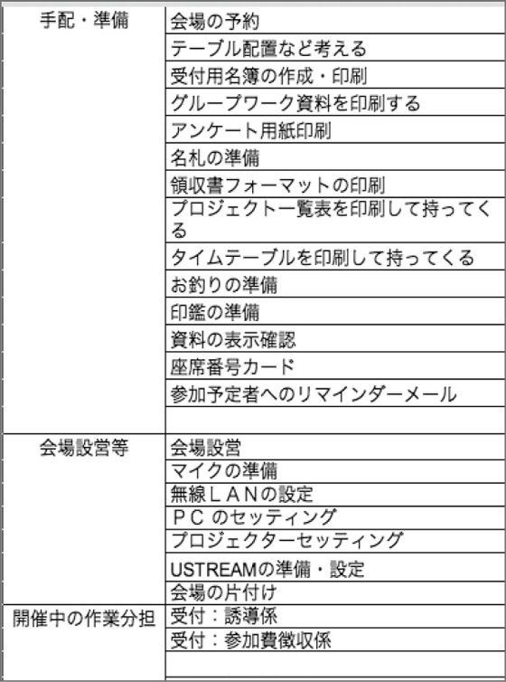
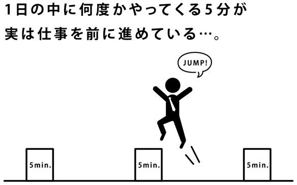
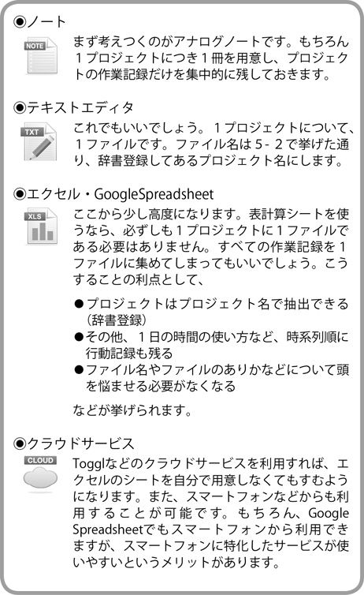

| スマホ時代のタスク管理「超」入門 | |
| 佐々木 正悟 & 大橋 悦夫 | |
| (2013) | |
この作品は、２０１３年２月東洋経済新報社より刊行された書籍に基づいて制作しています。
電子書籍化に際しては、仕様上の都合により適宜編集を加えています。
また、本書のコピー、スキャン、デジタル化等の無断複製は、著作権法上での例外である私的利用を除き禁じられています。本書を代行業者等の第三者に依頼してコピー、スキャンやデジタル化することは、たとえ個人や家庭内での利用であっても一切認められておりません。
スマホ時代のタスク管理「超」入門
「自分はもっとやれるはずだ」
口に出していわなくても、心の奥底でこう感じている方は多いでしょう。どうでもよい仕事から解放されて、もう少しストレスがなくなれば、自分は今よりずっと立派な仕事がたくさんできるはずなのに、と。
私もそう思います。そのための方法もすでにあります。それが「タスク管理」なのです。
「なんだ、そんなものか」と思う人がほとんどでしょう。「紙にやることを全部書き出して、それを片端からやっていくという方法なんて、ありきたりなやり方じゃないか。そんなことで物事が少しでもよくなると思うほうがどうかしている」と。
それは誤解です。
たしかにこれまでも「紙にTODOリストを書き出す」というやり方はありましたが「クラウド時代のタスク管理」は手法が全く違うのです。第一に「紙に書く」のではありません。「デジタルに記録する」のです。
「それのどこが違うのか、よく分からない」という人も多いかもしれません。しかし全く違います。クラウド時代に、タスクをデジタルに記録していくことで「いつでも、どこでも、完全に正しいリスト」を持つことが可能になります。これはクラウド上のリストをスマホで見るというスタイルが確立するまでは、不可能だったことです。ありきたりなやり方ではないのです。紙にメモを書くのと、クラウドにあるリストをスマホで見るのとは、質的に異なることなのです。
「いつでも、どこでも、完全に正しいリスト」があってはじめて、どうでもよい仕事から解放され、もっとストレスがなくなった状態で、すべてのエネルギーを本当にやりたいことに集中するという行動スタイルが可能になるのです。
私はそういうことを示したくて『クラウド時代のタスク管理の技術』（東洋経済新報社）という本を書きました。「サラリーマンにもとても参考になる」とか「フリーランスには必読の書」などありがたい評価をいただく一方で、「難しすぎる」とか「ここまでやる著者は病的ではなく病気」など独特の批判もいただきました。
とくに「難しすぎる」に関しては私にしてみれば意外、もっといえば心外で、なぜあれほど単純なシステムが「難しすぎる」と思われるのか何週間も悩みました。
その答えとして書いたのが本書です。本書はクラウド時代のタスク管理について、勘所をとにかく分かりやすくまとめ、初めての人にも確実に分かるように書きました。私だけでは「つい難しく書いてしまう」ので、ベストセラーになった『スピードハックス』（日本実業出版）の共著者でもある大橋悦夫さんの助力まで仰ぎました。
私は「タスク管理は難しくない」「誰にでもできる」「やれば効果が出る」ということを、どうしてもあらゆる人にお伝えしたいのです。本書がその一助となればと切に願います。
二〇一三年一月吉日
著者記す
スマホ時代のタスク管理「超」入門──目次
２ 大きすぎるタスクは「プロジェクト」にして階層式に整理する
７ 「丸ごと先送り」を防ぐためにタイマーはいつでも「５分」にセットしておく
８ 仕事に追われているときほどタスクリストの並び順を決めてからとりかかる
10 「どうとりかかっていいか分からない」ときにはタスクを分解する
12 どうしてもアナログを使わざるを得ない人のためのハイブリッドシステム①
13 どうしてもアナログを使わざるを得ない人のためのハイブリッドシステム②
装丁・本文イラスト／中村勝紀（ＴＯＫＹＯ ＬＡＮＤ）
本章ではまず「タスク管理を行うことのメリット」を７つ説明します。
すでにタスク管理を行っており、そのメリットも感じていらっしゃるという方はこの章を飛ばしてもかまいません。
７つのメリットにはもちろん共通していることがあります。私達はなぜタスク管理を行うかというと「忘れるから」にほかなりません。タスク管理とは覚え切れないことを忘れても、問題ないようにするためのものです。
この「忘れる」の中には仕事だけではなく、夢や目標、習慣、それに自分のこれまでたどってきた足跡までが含まれるのです。そんなもののすべてをいちいち覚えておけるものではありません。だからタスク管理を行うのです。
本題に入ります。タスク管理を行うことには次の７つのメリットがあります。
① タスク管理を行えば、事前に準備ができるので人から好かれるようになり、自信もつく
② タスク管理を行えば、見通しが立つので生産性が向上してやる気もわく
③ タスク管理を行えば、プロジェクトの管理ができる
④ タスク管理を行えば、繰り返し作業の管理ができる
⑤ タスク管理を行えば、悪癖を絶ち、よい習慣を形成できる
⑥ タスク管理を行えば、夢や目標を管理できる
⑦ タスク管理を行えば、ログが残るからタスクリストをより容易に作れるようになる
１つ１つ説明しましょう。
① タスク管理を行えば、事前に準備ができるので人から好かれるようになり、自信もつく
タスク管理を行っている人は、完全に忘れていたことをベストのタイミングで思い出せますから、人に好かれるようになります。人に好印象を与えられると、その人は自信を持ち始めます。
例えば同僚の結婚式に呼ばれていたとしましょう。
タスク管理を行っている人は、結婚式の前日までに、同僚に渡す花束と、同僚の好きなモンブランを用意しておくことができます。
タスク管理を行っていない人は、当日買うつもりだった花束を買い忘れ、同僚がモンブラン好きだったことを会ってから思い出します。
この２人は、善意や親切心における違いはないのです。結婚式の前日まで、花束のこともモンブランのことも忘れていた点で、両者になんの違いもありません。しかし花束とモンブランを買っていったほうがずっといい印象を残すことができます。タスク管理を行っている人はこのようにして、一生の間あちらこちらで「好印象」を振りまくことができ、行っていない人はそのつど差をつけられてしまうのです。
一生の間にその差はきわめて大きなものになるでしょう。その差がどうしてつくかといえば、タスク管理を行っているかどうかによって決まってしまうのです。
② タスク管理を行えば、見通しが立つので生産性が向上してやる気もわく
著者の行うタスク管理には「今日１日にやることだけ」でも50個から70個の項目があります。「朝起きてから夜寝るまでにやること」のすべてをタスク管理しているので、普通の人よりはだいぶ多いでしょう。読者の場合にはここまで多くはならないかもしれません。
それでも「１日にやること」のすべてを書き出したら、最低でも10個から20個にはなるはずです。このくらいの数でも、やるべきことを書き出すべき十分な理由になります。
タスク管理を行うことは「記憶を外部化すること」です。
外部化された記憶の代表例がメモです。メモのようなツールがないと私達のアタマはすぐにパンクしてしまうのです。
７プラスマイナス２という有名な数字があります。心理学者によると人間が１度に覚えておくことのできる項目数は、だいたいその程度だという意味です。10や20となりますと、１度に覚えておくことのできる項目数を明らかに突破しています。記憶に頼って仕事をしていれば必ず漏れが発生するわけです。
よほど無責任な人でない限り、毎日漏れが発生していても気にならないということはないはずです。やり漏らしていることがないかどうかが心配になるでしょう。タスク管理していればその心配は無用です。やり漏れの心配事から完全に解放されるのです。その結果頭の中がスッキリし、ストレスレベルが大きく低下します。
見通しがハッキリすればやる気も出ます。やる気とは、見通しがハッキリしていることをやろうとしているときにわいてくるものです。見通しの悪い濃霧の中を運転しているようなときには、そろそろと手探りで進むしかありません。やる気にもなれませんし、仕事に押しつぶされるような気がしてくるものです。
③ タスク管理を行えば、プロジェクトの管理ができる
「プロジェクト」とは完了に２日以上は必要な企画です。例えばこの本を書く仕事も１つの「プロジェクト」です。もちろん１日で全部は書き終わりません。毎日全体の１断片を少しずつ作り、時間をかけて最終的な１冊にまとめ上げるのです。「クリエイティブ」とはこうしたコツコツとした作業を安定して進められることです。「プロジェクト」を仕上げるために、実際とる行動が「タスク」なのです。
パニックになったら作業は停止してしまいます。１冊の本にまとめ上げるといったような、最終的な目標を手元で管理しているからこそ、人はクリエイティブたり得るのです。
プロジェクトを管理するためのタスクリストは、最も人気がある一方で最も扱いが面倒なものです。プロジェクトというものはだいたい、生き物のように形を変えます。最初は絶対にやるべきだと思ったことでも、手がけてみると絶対にやるべきでなかったということが分かってきたりします。
新しい製品をＰＲするためにイベントを開催するというプロジェクトを考えてみましょう。最初は有名人を呼んだり、軽食を用意したりすることが絶対に必須のリストになっていたかもしれませんが、震災などが発生して会場を変更したりする必要に迫られると、それらは絶対にできない、むしろやってはならないことに変わったりします。小さな変更まで含めるなら、プロジェクトのためのタスク管理は毎週のように変わります。
ですから、さすがにプロジェクトを頭の中だけで整理しようという人はめったにいません。プロジェクトを管理するためだけでも、タスク管理をするべきです。覚えておけないほどたくさんの項目があって、それを毎週のように更新しなければならず、しかも全部の項目をやるべきでないとなれば、記憶になど頼りようがないのです。
幸いにも今は、スマートフォンだけでもプロジェクトのリストが持てるほど高機能のツールがあります。
④ タスク管理を行えば、繰り返し作業の管理ができる
これに関しては「できる」ということに疑いを抱く人は少ないでしょう。
イメージしやすくするために「月・水・金」のゴミ出しを例にとります。
毎週月曜と水曜が生ゴミを出す日、金曜が資源ゴミを出す日だとします。
この種のルールは慣れてしまえばどうということのないものですが、新しく引っ越してきた市や町のルールに慣れるには、５週間ほど必要になります。
しかし５週間生ゴミを出し忘れたりすると、いやなことになります。夏真っ盛りではたまりません。
タスクリストにルーチン（繰り返し）機能がついていれば、冷蔵庫に貼ってあるような「月曜日には生ゴミ」などといった紙は不要になります。毎週日曜夜に「生ゴミをまとめる」というタスクをセットし、月曜日に「生ゴミを出す」というタスクをセットするだけですみます。あとはゴミのことは忘れていられるのです。
仕事や生活にはこの種のルーチンにあふれています。ルーチンを徹底的にスマホで管理している人と、そうでない人とでは、仕事の速度にも、ストレスレベルにも大きな差がつきます。ゴミ出しのような毎週決まり切ったルーチンでさえ、努力して思い出したりしている人をよく見かけます。世の中にはもっとずっと複雑でイレギュラーなルーチンがあふれています。
そうしたパターンに合わせてタスクをどんどんルーチン化していけば、ストレスは確実に減らすことができ、やる気もそんなにはいらなくなります。このメリットはきわめて大きいので、一見面白くないようでもタスクでルーチンを管理すべきなのです。
⑤ タスク管理を行えば、悪癖を絶ち、よい習慣を形成できる
タスク管理を行うことが、習慣を作るためにどうして役に立つのか考えてみましょう。
例えばマラソンの習慣を例にとりましょう。長距離を走る習慣を形成するためには、初めのうちは特定のルールを自分に守らせる必要があります。その際、タスク管理が大いに役立つのです。
私達はやることであれ買うものであれいうべきことであれ、あっという間に忘れます。新しい習慣を形成するためのルールなど、すぐに忘れてしまいます。
マラソンをするのには都合のよい時間帯があります。都合のよい服装もあります。持っていったほうがいいものがあります。使ったほうがいいアプリもあります。忘れないほうがいい準備は他にもいろいろあります。
そうした準備を毎回スムーズに終えてからマラソンを始めるのとそうでないのとでは、走ったときの爽快さが違います。走ったときいちいち不快になるのといつも愉快であるのとでは、マラソンの体験と印象を全然違ったものにしてしまいます。この愉快さと不快さの違いを生み出すのが準備であり、準備を保証するのがタスク管理なのです。
そして以上の効果はマラソンだけにもたらされるものではなく、貯金にもダイエットにも語学学習にも当てはまるのです。
タスク管理を行うことで身につけたい習慣を形成してみましょう。あるいは浪費や喫煙などついやってしまう悪癖を断ち切りましょう。
⑥ タスク管理を行えば、夢や目標を管理できる
私の友人に音楽で生きていきたいという夢を持ったサラリーマンがいます。
この人は一見すると理解しがたいくらい細かく時間を管理することで、毎日作曲に取り組んでいます。
１つの作品を作ることを「プロジェクト」とし、ひらめきから構想、実際の作曲、アレンジメントに至る全工程を「タスク」としてツールで管理しているのです。そのために朝早く起きて毎日「作曲のための時間」を１時間以上とっており、作曲を毎日進めてから会社へ通勤しています。
まさにこれが「夢を達成するためのタスク管理」です。音楽で生きるという大目標を、毎日作曲するという中目標に分解し、さらに作曲という中目標を、いくつかの工程というタスクに分解する。そしてそのタスクに取り組むための時間を朝の最初に用意して、タスクを実行していく。
もちろん会社で仕事をする時間が圧倒的に長いのですから、作曲に取り組むことのできる時間はそう長くはないでしょう。作曲を一気にこなしたくても、時間に限りがあります。小さなタスクに落とし込んで、日々ちょっとずつ実行していくわけです。全工程を漏れなくつぶしていくのはまさにタスク管理の得意とするところです。
こういった人は一見「啓示」とか「無意識からのひらめき」に頼って、直感的に作曲を行っているとイメージしがちですが、みながみなそうしているわけでもないということです。専門的な知識は必要でしょうが、一見最もタスク管理と縁遠い分野にもタスク管理は役に立つのです。
⑦ タスク管理を行えば、ログが残るからタスクリストをより容易に作れるようになる
この点はあまり強調されることがなくて残念なのですが、タスクを実行してチェックボックスに完了マークをつけたら、それはそのまま仕事のログになります。
だからログからチェックマークを外せば、それがタスク管理になるのです。
よくリストの作り方が分からないという人がいますが、リストを作るなど簡単なのです。自分が行動した記録をとります。それを箇条書きにします。それをタスク管理すればいいのです。
もちろん１度行動したのと全く同じようにすればいいというわけでもないでしょうから、若干の修正は必要でしょう。しかしすでに下書きがあってそれを修正するのと、白紙に一から作り始めるのとでは、難易度が全く違います。白紙から作るのはとても難しいことなのです。
タスク管理を行うのが苦手だという人は、作りたいリストの行動記録をまずとるようにしてください。最初は大ざっぱでもかまいません。それがリストの原型になり、やがて立派なタスク管理ができるようになるのです。
それにログが残っていれば自信にもつながります。
ずいぶんたくさん仕事をしたつもりなのに「今日１日何をしてたんだろう？」と思うことはありませんか？
これは不思議な感覚ですが「注意をあまり向けなかったことは記憶に残りにくい」という心理学的な原因があります。忙しすぎると自分のやっていたことに注意を向ける余裕がなくなるため、行動のあとの記憶が急速に薄れてしまうのです。
人は自分のやったことを振り返ってみて、初めて達成感を得られることがあります。
私には２歳になる娘がいますが、娘は気が向くと突然階段を上り始めます。段差は彼女の足の短さに対して大きいので、足元にしか注意が向きません。駅の階段などを上り切ると息切れを起こします。そのとき抱きかかえて、上ってきた階段に注意を向けさせてあげると、大はしゃぎしてその場で踊り出します。自分が上り切った段数に驚いて喜ぶわけです。
タスクリストをタスクのログとして残すのは、まさにこの「段数を一望する」行為そのものです。読者は小躍りはしないでしょうが、自分が子供のときに使っていた脳は、大人になっても奥のほうに残っていて、やっぱり大いに喜びます。その達成感を実感することが、仕事をする上で自信につながるのです。
それにタスク管理を行っている人は独りよがりに自信を持っているわけではないのです。タスク管理は自信に対する裏付けとなっているだけではなく、信頼に対する裏付けにもなっているからです。
タスク管理といえば紙にでもスマホにでも用事を書きつけて、書いてあることをあとでやるやり方です。これによってうっかり忘れが減るのはいうまでもないでしょう。
大事なのはただ減るのではなく激減するところです。なぜ激減するかというと、タスク管理を行っていない人はそれほど忘れていることが多い上、忘れていることすら忘れているからです。
例えば妻は在宅で仕事をしている私のiPhoneへ、買い物先から電話してきます。何を買うかを忘れているから冷蔵庫の中身をチェックさせるのです。これが少なくとも月に２度はあります（私はそういう記録を残しているから分かるのです）。しかし妻にメモを持ち歩くようにいうと「私はそんなこと忘れません」と断言します。忘れていることを忘れているのです。
あなたもタスク管理を行っていないなら、これと全く同じことをしています。あなたがしょっちゅううっかり忘れすることを他の人は知っているのですが、あなたは忘れているから知りません。そして「管理なんかしなくても忘れないよ」と高笑いしていることでしょう。
そういう人がタスク管理を行うようになると、他の人からの信頼度は急上昇します。周囲の人にしてみれば、あなたが忘れることを前提にして働いていますから、うっかり忘れが減るだけでもとても助かるのです。
ここまで第１章では「タスク管理を行うことの７つのメリット」を紹介してきました。
読者の中には「こんなことはすでに手帳でやっている。わざわざクラウドという技術でタスク管理などするほどのことではない」という人もいるでしょう。
しかしクラウドでタスク管理することをマスターすれば、手帳で仕事を管理するよりも圧倒的に楽になり、ミスなども大きく減らすことができるはずです。時間も今よりはるかに有効活用できるでしょう。
クラウドを使ったタスク管理のメリットと実践的な方法を、次の第２章でまとめて説明します。
iPhoneを初めとしたスマートフォンが登場してくれたおかげで、タスク管理は今までよりも一段とやりやすくなりました。その理由を一言でいえば「パソコンから離れても、タスクを管理できるようになったから」です。
スマホ登場以前はどうしても本格的なタスク管理のためにパソコンが必要でした。ですからデスクトップのパソコンから離れたとたん、
① 記憶に頼る
② 紙の手帳を使う
③ ケータイなどを使う
④ 小型のパソコンを持ち歩く
といった選択肢のいずれかを選ばなければならなかったのです。
①はほとんど論外で、パソコンから離れたとたんに記憶で何もかも思い出せるくらいなら、そもそもパソコンでタスクを管理する必要などないでしょう。
②の紙の手帳は決して悪いわけではありませんが、パソコンに書かれている細々したタスクを手で書き写すのはとても面倒ですし、印刷するのも面倒でやらなくなりがちです。それに持ち出した手帳で仕事を終わらせたり、変更が起こって修正した際、それをまたパソコンでも入力し直さなければなりません。それは無駄なことであるため、やらずにすむならやらなくなるのが普通です。
③は今あまり見かけなくなりましたが、速度的にも機能的にも、また画面の狭さからいっても、ケータイでタスク管理というのは無理がありました。
最も現実的なのは④の小型パソコンだったのですが、こちらはたいていの人には大げさすぎるのです。カフェで仕事をするならこれもいいでしょうが、スーパーで買い物メモが必要なとき、小型のパソコンを持ち出す人は一種の変人です。
以上のすべての問題をあっさり解決してくれるのがスマートフォンなのです。スマートフォンはいわばポケットに入る小型のパソコンであるため、いつ、どこに持ち出しても違和感なく利用することができます。
スマートフォンで「何もかも」をする必要はありませんが、タスク管理をスマートフォンにある程度任せてしまうのは理にかなっています。「タスク」＝「仕事の小さな１単位」というのは文字情報ばかりです。扱うデータ量が大きいわけではないので、そんなに高性能のコンピュータでなくても十分扱うことができます。スマートフォンの性能はものすごくて、音楽を聴いたり動画を見たりすることができて当然といった時代です。ですから、たかだか数百行のテキスト情報の取り扱いができないはずがありません。
加えてタスク管理がスマートフォン向きなのは、入力する文字情報が少ないところです。「スマートフォンより手書きのほうがずっと速い」とおっしゃる人が多く、スマホに慣れていなければその通りでしょう。ただそれは千字以上の文字入力をする場合の話で、普通タスクにはそんなにたくさんの情報を入れません。
実際日本ではTwitterという手軽なコミュニケーションサービスが一時爆発的に流行しましたが、その背景にはiPhoneの普及がありました。Twitterでやることは基本的に「今何をしている？」という問い合わせに対して１４０字以内の「つぶやき」を発信するだけですが、こういう行為にスマートフォンはとても向いているわけです。１４０字ならスマートフォンへ入力するのに慣れていない人でも、「手書きのほうが速い」人でも、文字入力する気になれます。タスクに１４０字もいりません。「トマト」とか「きゅうり」と打つような買い物メモのことを思い出してもらえれば、「手書きのほうが速い」としてもその差は小さなものでしょう。
またスマートフォンであれば、「１度入力した情報」を再利用できます。手帳や手書きメモの大きな欠点はこれです。情報の再利用が不可能ではないにしても難しく、普通はまずやらなくなるのですが、スマートフォンでのタスク管理に情報の再利用はごく普通のことです。スマートフォンなら１度入力した情報は、２度と入力する必要がなくなるのです。
以上から、タスクリストにスマートフォンを使わない理由はないのです。
タスク管理することの最も重要な目的の１つは遠大な目標を達成することです。時に「夢を叶える」といわれることもあります。
「最終目標」を達成するためにやらなければいけないことを、大項目、中項目、小項目と分解し、その１つ１つの「タスク」をつぶしていくという「夢の叶え方」は、１つの定番となりつつあります。
この方法に関しては四の五のいわずにまずやってみることです。やるだけならお金はかかりません。時間もそれほどにはかかりません。リスクがほとんどないわけです。
１つ具体例を挙げるなら「将来はハワイに住みたい」という夢があるとします。ではそのためにやらなければならないことは何でしょう？
「お金を稼ぐ」。ではいくらくらい稼ぐ必要がありますか？「分からない」。では誰かにそれを尋ねて教えてもらうという「タスク」が発生します。「本を読む」というタスクでもいいでしょう。その前に「本を見つけて買う」というタスクが必要かもしれません。
このようにして「将来ハワイに住む」ために必要なことを考えつく限り洗い出すのです。それらをすべて「タスク」として、時間をかけて１つ１つ実行していくわけです。
この方法に関してよく指摘される批判として「洗い出した項目をすべて実行すれば、本当に目的が達成されるのか？」という問題があります。もちろんそういう保証はありません。そもそもやったことがないことを達成するために「思いついたこと」を全部やったとしても、目的が達成されるとは限りません。洗い出しが不足しているかもしれませんし、とんちんかんなことをやってしまうかもしれません。
しかしそれはそれでよいのではないかと思います。どんなこともそうですが、やってみて初めて明らかになることはたくさんあります。やらないとどうしても見えてこないことというのはあるものです。どれほどじっくり考えてみても、やってみなければ明らかでないことはあり、やる以上いくらかの無駄は避けられないのです。
「夢」に向かって具体的な行動を起こすということは楽しいものです。最終目標をイメージ通りの形で達成できないとしても、考えつく限りやってみて、結果何にもならなかったということはないはずです。
クリティカルなポイントをしつこく突く
とはいえ、目標達成のためのタスク管理として、以上の手法だけがすべてではありません。もちろん他の手段もあります。
目標達成のために最も重要だと思えることにまず集中するというやり方です。
確かに「ハワイへ移住する」となれば、やる必要のあることはたくさんあるでしょうが、「何はともあれまずはお金が必要」という人もいるでしょう。これは人によって、状況によって違ってきますが、「その夢を叶えるために最も重要なポイントを１つ挙げるとしたら何？」という質問への答えがあるはずです。
この「重要なポイント」を押さえるために可能な限りの時間を注ぎ込むのです。
中でも、１日の最初の時間は大事です。起きた直後の時間帯のことです。この時間帯のことを特に「ファーストタスク」とタスク管理では呼びます。
ファーストタスクで何をするかということは、その人が人生で何を重視しているかを具体的に示します。朝起きてすぐに朝食をとるなら、その人のファーストタスクは食事になりますし、起きてすぐ会社へ行くなら、その人にとって最も重要なのは会社へ行くこととなるでしょう。
「ハワイへ移住したい」というのが人生の目的であれば、起きてすぐにごはんを食べている生活には改善の余地があります。
「夢」を見つける
以上はすでに「ハワイへ移住したい」という具体的な夢のある人の話でしたが、当然そんなに具体的な目標など持っていないという人もいるでしょう。「でも漠然とした不満や不安はあるし、何かに打ち込んでみたい」というあいまいな「夢」を永らく持っている人もいると思います。
タスク管理は「夢を持つ手助け」をすることもできます。
具体的には「いつかやりたいことリスト」を作ることです。これはタスクリストの形式ですが、別に実行されなくてもかまいません。
何か思いついたタイミングで、リストに追加していけばいいのです。これを「やりたいことのカタログリスト」といいます。
カタログリストは、自分の本当に欲しているものを教えてくれます。読書家によくあることなのですが、書評を読んだり書店に足を運んだりすると、つい欲しい本がたくさん出てきてしまって、手当たり次第に買ってしまいます。しかしその人の家の引き出しには、買うつもりだった書籍リストや新聞の切り抜きなどがたくさんつまっていたり、ノートにいつか読みたい本のリストがあったりするものなのです。
そうしたリストは一元化するべきです。そして何かを買ったりしたりする前に、いつでも見返すことができるようにしておくとよいでしょう。「ああそうだ。これを買うならその前にこちらを買わないと」ということになるはずです。この作業を繰り返すうちに「自分が本当に欲しかったもの」や「自分が本当にしたかったこと」が徐々に明らかになっていきます。
タスク管理することの大きなメリットの１つは、モチベーション、つまりやる気を上手に管理できることです。
こういうと人によっては疑わしい気になる人もいるようです。そんなことがそんなに簡単にできるはずがないと思われるのでしょう。
しかしモチベーションの管理というのは案外簡単なものです。「私はやる気が全然ないんです！」という人もいるのですが、実際そんな人はいません。やる気ゼロの人というのはいないのです。ただ、やる気が不適切なタイミングで浪費されているにすぎません。やる気の浪費を防げば、誰もがある程度エネルギッシュに働くことはできるのです。
何が不満であるかを明らかにする
モチベーションの源泉とは不満です。例えば部屋を片付けようというモチベーションは、部屋が汚すぎることへの「不満」から発生します。部屋が汚すぎるだけではモチベーションはわきません。部屋がいくら汚くても全然苦にならない人はいます。そういう人は片付けようというモチベーションを持たなくて当然なのです。
会社の業績であっても同じことです。社長や役員の人は会社の業績が悪いことに強い不満を抱くでしょうが、平社員はさほど気にとめないかもしれず、アルバイトの人は何とも思わないでしょう。そういう人達に向かって、会社の業績をよくするためにやる気を出せといってもほとんど無駄なことです。
つまり何かをやるためのやる気を出したい・出させたいといったときには、どんな不満がそれによって解消されるのかを常に意識できるようにするべきなのです。そういう情報を全く持っていないタスクが世の中には多すぎます。
何かの拍子で思いついた「税務書類を整理する」などというタスクを書いたままにしてしまうのですが、税務書類を整理すると、誰の、どんな不満が解消されるのでしょう？ そもそも税務書類を整理するというタスクをメモやスマホに書いたとき、どんな不満が持ち上がってきたのでしょうか？ これが分からなくなると、税務書類の整理などにやる気がわかなくなって当然です。「身近な人がやっているのを見て、かっこよかったから」などというのはよくありません。それだと、税務書類の現状についてなんの不満もないのですから、翌日になると整理する気などみじんもなくなるでしょう。
誰の不満であるかを明らかにする
タスクというのは仕事ですから、どの項目を見ても自分の不満を解消するためのものということはあり得ません。というよりも、どの項目も他人の不満を解消するためのものであることがほとんどかもしれません。
この場合、タスクを処理するモチベーションを直接得ることは難しいかもしれません。「課長の不満を解消することが、自分にとっての何よりの喜びだ」という人もいるでしょうが、そうでない人もたくさんいるでしょう。
しかし面白いことだろうと面白くもないことだろうと「このタスクをこなすことによって誰のどんな不満が解消されるのか？」を情報として常に書いておく必要はあります。そうしないと不満の所在が分かりにくくなり「このタスクはやる気がしない。なぜ自分の仕事なのにやる気がしないのだろう？ 自分はダメ人間だ」などと、とんちんかんなことを考え始めるからです。
「他人の不満」を解消するために自分のやる気を出すというのは、やや難しいことです。こういう場合には自分がダメ人間かどうかを考える前にやることがあります。タスクを自分の不満に変換するために、とことんまで細かく砕くのです。
例えばこの原稿は、究極的には読者を満足させるためのものです。あるいは読者の仕事や生活における不満を想像し、それを解消するためのものです。しかし、それだけを念頭に置いて半年もの間ずっと原稿を書き進めることができるかといえば、そんなことは無理です。
そこで細かく砕きます。第１章の、１節には、何を書くかといったことを、各章ごとに先に決めていきます。すると「それらはまだ書かれていない」という不満が、自分のものになります。不満を人のものから自分のものへと切り替えるのです。そうすると書くためのモチベーションが得られます。
それでも必ずしも自分が書きたいようなことでなく、にもかかわらず本書には必要な内容もあります。そういうものはある意味「読者の満足だけを念頭に置いた箇所」なので、著者のモチベーションは正直さほど上がりません。そういうところは「いっそう細かく砕く」のです。例えば、文章を途中のまま書かずに放置しておきます。
人間は単純にやりかけで放置したところをなんとかしたいと思うものですから、そうした「穴」を埋めようとします。これは全く読者の満足とは関係なく、自分の不満を解消しようとする「やる気」なのです。
タスク管理が軌道に乗り出すと、何かに不満を感じる前に仕事を先に進められるようになります。
例えば、著者は「爪を切る」というタスクを６日ごとに実行していますが、この「６日」という感覚は爪が伸びすぎて不快になる直前のタイミングなのです。
ほとんどの人は爪が伸びて不快になったら、爪を切ります。そうすると爪のことで１週間おきくらいに１度は不快感を感じることになります。しかしタスクで管理するようになると、爪が伸びすぎる不快感と完全に縁が切れます。
「たかが爪」と思われるでしょうが、生活上のありとあらゆる点でこうした不満を感じなくなれば、本当にストレスフリーライフを実現できると思いませんか？
ルーチン化の威力を実感する
「たかが爪」から少しずつレベルを上げてみましょう。
・資源ゴミなどの処分
・シンクの掃除
・お風呂掃除
・トイレ掃除
・家計簿
・経費精算
・虫歯の治療
・健康診断
どうでしょう？ すっぽかすたびに少しずつですが事態は悪化します。すっぽかすたびに次回の対応が面倒になります。状態は悪くなり、１度にやることは増えて、しかもやりたくなくなります。
「なぜ毎日とか、毎回とか、そんなにマメにやらないとならないのか？ そんな面倒なことをしているヒマはない。まとめてやればいい」と簡単にいう人がとても多い。そのようにいう人は、本当に忙しいのでしょうが、より多く時間を失っています。毎回やるやり方と、まとめてやるやり方を比較した場合、まとめてやるほうが必ずより多くの時間がかかるのです。その分は完全に無駄です。
例えばお風呂の掃除などは、水垢が溜まってヌルヌルになる前にやると汚れはすぐ落ちますが、これを１週間に１度まとめてやることにすると、毎日かける時間の７倍ではすまなくなります。１回２分でよかったところが、１週間に１度ですと14分以上かかるのです。その分は時間の無駄です。
家計簿も、レシートをもらったときに記録すれば（スマホならできます）、１回10秒はかかりません。仮に１日分をまとめても１分前後です。しかし１週間分をまとめてしまうと７分以上かかります。なぜかというと日付入力の手間が発生したり、レシートのない分の計算など、面倒な事態が発生するからです。経費精算に至っては、毎日やるのと１年分をまとめるのとでは、かかる時間が全く違います。１年分をためている人はどう見ても３６５倍の時間ではすんでおらず、優に１０００倍以上の時間をかけています。そのような無駄な時間を大量にかけている人が毎日記載する人をヒマ人呼ばわりするというのはとても残念なことです。
虫歯の治療に至っては、そもそも４ヶ月に１度程度歯医者に行っておけば、虫歯自体進行しませんので、年に２時間もかけずにすみます。それを２年も３年も放っておくと、虫歯の治療だけで数回歯医者に行かなければならなくなります。その分の時間も完全に無駄です。
以上からお分かりの通り「まとめてやる」というのは全く時間の節約になっていないのです。
やる気がなくてもできるようになる
もう１つ「そのつどやる」やり方には大きなメリットがあります。習慣化させた行動を起こすのには、やる気が全然必要なくなるのです。
私自身習慣化にあたってとてつもなく苦労したのは、やはり歯医者に定期的に通うことでした。人にもよると思いますが、好きな人はたぶんいないでしょう。歯医者に行くくらいなら、税務資料を30日間ぶっ通しで整理していたほうがずっとマシだというくらい行くのがいやでした。
しかし３回訪れて、１度虫歯の治療をして、歯石をとってもらってからは、定期的に行くのが全然苦ではなくなりました。好きになったとはいいませんが、習慣化したのです。
タスクリストに書き入れて習慣化する効果は絶大です。可能なことであればなんでもできるようになります。「習慣化なんて地味で格好悪い」と時々いわれるのですが、虫歯がたくさんあって、オフィスの机がゴミの山のように見えて、ヌルヌルのお風呂に毎日入ることがさほど格好いいことだとも思えません。
習慣化と格好の良し悪しは無関係のことです。つまらないことをいつまでも考えていないで、面倒事はさっさと習慣化して片付けていきましょう。仕事も生活もスッキリします。
スマートフォンでタスクをクラウド上におくことができるようになり、最も大きく変わったのが「本当の意味でタスクの一元化が可能になった」ことです。
本当に一元化できるようになったのです。このようにいうからには、今まではそうではなかったといいたいわけです。
ごく簡単な例を出します。
□トマト
□きゅうり
□なす
このように、家のパソコンからリストを作ったとしましょう。「買い物メモなどにパソコンを使うのなんてばかばかしい」といわないでください。これは話を簡単に理解していただくためのサンプルです。
家で作ったリストであっても、ネット上にデータが上がってさえいれば、スマートフォンを持ち出すだけで同じデータを利用できます。パソコンを持ち出す必要はもちろんないのですが、パソコンとスマートフォンをケーブルでつないだりする必要すらないわけです。
そして外出先で「トマト」を買ったらそれにチェックします。するとそのチェックがパソコンのデータにも反映されます。いつ目にしているデータも最新情報であり、いつ編集しても最新の状態が即座に反映されます。タスクの一元化ができるということは、データの状態を心配しなくてもよくなるということです。
「今やるべきこと」が常に明らかになっている
それがそんなに大切なことなのか？ という人もいるかもしれません。実に大事なことなのです。なぜならタスクが完璧に一元化されて初めて「今やるべきこと」が常に明らかになるからです。
近いことは手帳やメモでもできるではないか、という人もいるでしょう。近いことは、確かにできます。しかしこの世に紙の手帳しかなければ、いつもいつもかなり大きめの手帳を持ち歩く必要が出てきてしまいます。タスクをどんどん書き入れてみると、その分量は急速にいっぱいになってくるものです。小さめの手帳であれば持ち歩きは容易ですが、かわりに書き込める分量に制限が出てきますし、大きいといつも持ち歩く気になれません。
デジタルであれば、たくさんの情報を一気に書き込みたいときは大画面のパソコンを使い、持ち歩くのはスマートフォンという合理的な使い分けができます。それでいてすべての情報は常に最新の状態に統一されているわけです。
また、デジタルであればやり終えたタスクを見えなくすることが容易ですし、自動的に並びが変わります。例えば、
■トマト
□きゅうり
■なす
というところまで処理したとき、画面を切り替えるだけで
□きゅうり
だけを表示させることができます。これが紙の手帳ではできないところであり、デジタルをタスク管理に活用する大きなアドバンテージなのです。
これはただ表示上だけの問題に見えるかもしれませんが、デジタルではすぐ次のように並べ替えてくれますし、しかも情報を付加してくれます。こんな具合にです。
■トマト 処理日２０１２／０６／２９
■なす 処理日２０１２／０６／３０
□きゅうり 未処理
つまりチェックを入れるということは、紙ではただ単にチェックマークを追記するだけのことですが、デジタルではデータが書き換わるのです。しかもクラウド技術を利用していれば、書き換えられた最新のデータをすべての端末から扱えます。パソコンからスマートフォンなどに利用する端末を変えても、データの連続性を保つことができるのです。
データの連続性を保つことができれば、整合性も保てます。やってないことが何であるか分からなくなったり、勘違いによるミスも激減するはずです。日付の確認ができればダブルブッキングなども減らせるはずですし、できもしないほどたくさんの仕事を詰め込んで、締切に間に合わなくなるというトラブルも未然に防ぐことができます。
何をやっていないかについての情報も常に最新なのですから、やり漏れも当然減らせるでしょう。
スマートフォンとクラウドは「集中と没頭」を技術的に可能にしてくれる上に、ミスやミスによる不安を大幅に減らしてくれるサービスなのです。
OmniFocusやNozbeやToodledoなどの高機能のツールになると、「タグ」や「コンテキスト」という「どこで」「誰と」タスクを処理するかといった情報を付加できます。
タスクには例えば「オフィスでする仕事」や「郵便局で送る書類」などのように「どこでその仕事をやるか」の情報を付加すると便利なものも多くあります。この「どこで」に関する情報を「コンテキスト」といいます。タスクごとにコンテキストを付けておくと「自宅で」とか「オフィスで」とか「郵便局で」するタスクを後でまとめられるので都合がよいという考え方があります。なおコンテキストをタスクに付ける機能はしばしば「タグ」と呼ばれています。
これを駆使するとものすごく合理的にリスト管理できるようになりそうに思って、つい無性に凝りたくなるのですが、あまり凝りすぎないようにしましょう。
例えば家でやるタスクもあれば、オフィスでしかできないようなタスクもあります。
雨の日に持つべき持ちものもあれば、出張前に用意すべきものもあるでしょう。
こういった考えに沿って、例えばNozbeのコンテキストを使えば、「家」「ＰＣ」「調子のよいとき」といったタグを付けられて、効率よくタスクリストを管理できると思うわけです。
でもこれが意外にうまくいかないのです。
例えば「＠自宅」というコンテキストは誰にでもあるでしょうが、それが朝の自宅なのか、夜の自宅なのか、休日の自宅なのか、出張後の自宅なのかで、登場すべきリストは全部違ってくるでしょう。
すると空間名だけで切り出していくのは無意味だということで、これにコンテキストを追加することになります。「家」と「早朝」や、「家」と「出張前」など、コンテキスト要素が徐々に増えていきます。おそらく人名も加えたほうがいいと思えるでしょう。するとコンテキストがどんどん増えて、ダブったり単独では使えなかったりして、だんだん管理が面倒になっていきます。
時間帯をコンテキストにする
そこで「時間帯」というコンテキストを用意します。
例えば家にいてＰＣに向かうことができて、しかも調子がよい時間帯というのがあるのです。当然、日によって多少の変動はあるかもしれませんが、波は一定しています。
どうするかというと、次のような時間帯の候補が考えられるでしょう。
・起床後～出勤前
・出発～通勤時間～出社
・出社～仕事を始めるまで
・午前中のオフィス
・昼休み
・午後のオフィス
・夕方のオフィス
・退社～通勤時間～帰宅
・帰宅後のひととき
・就寝前
これらがそのままコンテキストになるのです。
当然、似たようなタスクが同じコンテキストに集まってくることになります。例えば、就寝前には就寝前にふさわしいタスクばかりが集まるので、心安らかに最後の仕上げをして、眠りにつくことができるでしょう。ここが非常に大事なところです。
コンテキストというものが機能しなくなるのは、あるコンテキストで抽出したリストの中に「そのときには処理しないタスク」が雑音になってしまう場合です。「＠自宅」というコンテキストで切り出しただけのリストが機能しないのは、自宅でやることが全部同じリストに入ってきてしまうからです。だからもっと絞り込む必要が出てきてしまう。そうしているうちにコンテキストの要素が増えてしまうし、１度しか使わないようなコンテキストも残ってしまい、コンテキストが使いにくくなるのです。
そんなに複雑にせず時間帯のコンテキストを入れれば、時間帯と無関係に存在する空間というのはないので（そんな人もいないので）、自動的にコンテキストの要素が絞り込まれます。時間帯というコンテキストを用意するだけで、人名や空間のコンテキストをグッと減らすことができるということです。
スマートフォンの登場で「時間帯コンテキスト」がますます有効になる
スマートフォンはいつでも身につけていられますから、タスクに「日付＋時間帯」というコンテキストを与えておけば、理論上はすべてのタスクに最低１度は遭遇することが可能になりました。
空間というコンテキストだけが与えられたタスクは、そこへ行かない限り登場しません。それでいいことも多いのですが、例えば「虫さされの薬を買う」というタスクがあったとして、「薬局」というコンテキストだけを与えておくのは、理にかなっているようでそうではありません。なぜなら虫さされの薬は薬局に行っても行かなくても必要なものだからです。これが「帰宅時」という時間帯のコンテキストを与えられていれば、少なくとも薬局に行かなければならないことを思い出せます。
すべてのタスクがパソコンに入っているだけですと、すべての時間帯にパソコンの前にいなければならなくなりますが、スマートフォンでタスクを確認できれば、時間帯のコンテキストだけでもタスクを管理できるわけです。
やりたいことややるべきことが次から次へとふってきて、考えているだけで頭に血が上ってしまっていっこうに作業がはかどらないということがあります。
そんなときこそ焦ったり悩んだりしている場合ではないのですが、なぜか実際に行動をとることができず、ただでさえ足りない時間を無駄にしてしまいがちです。
そんなときにうってつけのクラウドアプリがあります。
Outlinerに書き出して頭をさっさと整理する
このアプリは図の通り箇条書きを階層的に整理してくれるツールです。いわゆるアウトライン・プロセッサーと呼ばれるものです。アウトライン・プロセッサーとは、概念を大・中・小項目ごとに整理して、階層表示してくれるツールをいいます。文章を書く際、例えば章、節、項目で整理するためにアウトライン・プロセッサーを使うと便利な場合があります。
特徴はブラウザ上で使えること。iPhoneで利用できるアプリは有料（３５０円）で、ブラウザ上の内容と同期をとることができます。
手元にiPhoneしかないときでも、目の前にMacやＰＣがあるときでも、ほとんどの環境で利用することができます。これを利用してやらなければいけないことや、すぐにやるべきことをどんどん書き出していきましょう。整理はあとからどうにでもできます。
重要なことは一気呵成に全部吐き出すことです。整理は直感的に簡単にやれます。そこが紙と違うところです。やれるかどうかとか締切に間に合うかどうかなど考えずにとにかく書き出す。スピーディであればあるほどいいと思ってください。
20分くらい続けて書き出せば、書くことがだいたい尽きるものです。もちろんそこの書き出す作業を全部やるのは大変ですが、書き出しても書き出さなくてもやらなければならないことはやらなければならないのですから、ここで躊躇するのはやめましょう。
終わったら整理します。同じ仕事に属することは大項目の下へ。直感的に移動できると思います。何階層も分けず、できれば２階層くらいにしておいたほうがあとあと便利です。
なぜこれがうまくいく？
この方法はタスク管理の大原則である「考える時間と実行時間を分ける」やり方です。
タスク管理に馴染んでいない人は、どうしても「計画する時間」や「考える時間」をもったいないと思ってしまいます。そうして考えながら作業したり、計画を頭で練りながら作業します。
しかしそうしてしまうと、作業中ずっと考え事をしていることになります。時間が余計にかかりますし、心理的な負担も大きいのです。
階層式で整理できるアウトライン・プロセッサーは「作業を網羅する」ことや「作業を分解する」ことを助けてくれるツールです。タスクがたまってきたときにやるべきこととは「漏れなく整理する」ことと「手順を明らかにする」ことなのです。そのために必要なことは網羅と分解です。計画や整理をやらず、頭の中でもやもやさせっぱなしで作業するのは、大変非効率的なのです。
仕事には「大きすぎてすぐ終わらせるのはとても無理」というものがあります。そういった仕事を「プロジェクト」などと呼び、一定のやり方に沿って進めれば確実に完了させられるものなのですが、不幸にして「プロジェクト」の扱い方をこれまで全く習ったり考えたりする機会がなかったということもあるでしょう。
大きめの仕事と一口にいっても漠然としすぎているかもしれません。少なくとも１日では終わらない仕事、場合によってはひと月かかってしまうような仕事は「プロジェクト」といえるでしょう。
そのような長期にわたる仕事を処理するには当然長期戦を覚悟しなければなりません。長期戦ともなるといろいろと面倒なことがあるのですが、特に気をつけるべきことは次の３点です。
① 締切に間に合うように計画を立てる必要がある
② １つ１つの仕事のサイズは小さめにする
③ 無駄が発生しないようにきちんと作業の順番を決める
私的な用事であればともかく、仕事のためのプロジェクトとなれば当然締切というものがあるはずです。受注した製品管理のためのシステムの締切が、今世紀中に作ればいいということはまずないでしょう。

とはいえ、いくら急ぐ気持ちが強いとしても、タスク、つまり１度にとりかかることのできる仕事量はたかがしれています。この「タスクを実行可能なレベルに小さく分ける」という段階を踏まずに「面倒くさいから先送りにする」という人が意外に多い。サイズを小さくすればちゃんとやる気になれるのでぜひ小分けにする習慣をつけてください。
最後に、プロジェクトは順番が大事です。船のプラモデルなどでよく、順番を考えずに組み立ててしまうと、マストを立てられなくなったりすることがありますが、そうなると部分的に２倍の時間がかかることになります。最近はただでさえ厳しい締切の中で仕事をしている人が多いので、このような二度手間は致命的なことになりかねません。
階層式にタスクを整理する
しかし紙のメモなどで前記の問題を回避するのはなかなか大変です。
そこでやはりデジタルツールを使うことになりますが、次ページの図のようにプロジェクト全体のタスクを整理してから仕事にとりかかるようにしましょう。
整理の手順は次の通りです。
① やらなければならないことを洗い出す。分からないことは他人に聞く
② いくつかのタスクをこなせば達成されることをまとめる
③ 中項目や小項目の順番を整理する
④ 小項目がいずれも「実行可能なサイズ」になっているかどうか確認し、なっていなければさらに分解する
図はGoogleドライブというGoogleが無料で提供するクラウドの表計算アプリです。

このように表計算アプリを使ってもプロジェクトの整理は可能です。専用のアプリを使うともっと手軽に複雑なことも可能になります。MacであればOmniFocusがオススメです。またWindowsでもMacでも利用可能なクラウドサービスとして、すでに登場しているNozbeもプロジェクトの整理に使えます。
何をどこまでどのようにやって、これからどうするかをハッキリさせる
以上のような複雑なことを、頭の中だけでできるという人は天才です。普通の人にはそんなことはできないので、テキストのユニットにしてユニットを操作するというわけです。
紙や付箋でもやれそうなことですが、デジタルの専用ツールのほうがはるかに楽です。プロジェクトをいくら管理してもプロジェクトそのものが進むわけではないのですから、ここに時間や手間をかけるのは避けましょう。できるだけ手軽にパッとやれるのがよいのです。そのためには専用のデジタルツールを使うのが一番です。
「現場」ではMacやＰＣが使えないかもしれません。GoogleSpreadsheetはクラウドに対応していますし、OmniFocusやNozbeもiPhoneで使えます。ですからプロジェクトの進行状況をいつでも確認できる上、修正や追加も時間と場所を問わず可能です。
前節で「締切に間に合うように計画を立てる必要がある」とさらりと書きました。
その通りではありますが、それがなかなか容易ではないものです。もちろん容易でなくても仕事ですから、締切には間に合わせなければなりませんし、締切に間に合わせるには早いうちに計画を立てておく必要があるでしょう。
締切に間に合わせるためにも、やはり前節で紹介した通り「仕事を小分けにする」ことが大事です。仕事を小分けにして毎日少しずつ確実にこなしておかなければ、大きなプロジェクトなどは決して終わらないはずです。
しかし小分けにするだけではいけません。
小分けにした仕事に、簡単でもいいから実行する「日付」を振っておく必要があります。すべてのタスクに実行日を振ることが難しければ、直近の３日分だけでいいから割り当てましょう。
・今日やるタスク
・明日やるタスク
・明後日にやるタスク
このようにしておくだけで、３日で進められるプロジェクト全体の割合がなんとなく見えてきます。単純計算では、これの約10倍が１ヶ月分です。
「実行日」こそ管理しよう
図はプロジェクト管理の一例です。「階層式管理」と「実行日」などの機能を持っているツールなら何を使ってもＯＫです。

ほとんどのタスク管理ツールに「実行日」などというものはなく「開始日」「終了日」「締切日」などがほとんどです。
管理するべきなのは「いつ実行するか？」です。「締切日」はたしかに大事ですが、仕事が立て込んでいる人ほど「締切日」=「実行日」となりがちなものです。それではもちろんいけないのですが現実はそうなる人が多いのです。
むしろタスクはうんと小分けにしてしまい「ここまでは今日が締切」という形にしてしまいましょう。それを毎日繰り返すと、気がつくと仕事が終わっているというのが現実的なのです。
それなら「開始日」を「実行日」にしてしまえばいいのではないかと思われるかもしれませんが、もちろんそれでもかまいません。要は日付でタスクを管理し「実行する日」を決めればいいのです。
ただ「今日分」を小分けにして切り出した以上「開始するだけ」ではいけません。その日のうちに「終了」させる必要もあります。その意味ではやはり「実行日」なのです。
全体がいつ終わるかは徐々に見えてくる
「このやり方では、結局プロジェクト全体がいつ終わるかまでは分からない」と時々指摘されることがあります。その通りです。「いつ終わるか？」は「ある程度やるまでは結局分からない」ものなのです。
「いつ終わるかが分からないととりかかれない」という人もいます。不安な気持ちは分かりますが「とりかからなければいつ終わるかは永遠に分からないし、だいいちとりかからない限り終わることはない」のも事実なのです。
「いつ終わるかは、とりかかって仕事が進むうちに分かる」というのは原則です。「いつ終わるか」が一番正確に分かるのは終わる直前です。一番不正確なのはとりかかる前です。
例えば、OmniFocusなどで全体像を少しでも明らかにするのは「いつ終わるかの想像」をなるべく助けてもらうためなのです。想像力だけで１００日も先のことを見通すことはまず無理です。OmniFocusがそれを助けてくれます。助けてはくれますが、代わりに答えを教えてくれるわけではありません。
私も30冊近く本を書いてきましたが、毎回原稿に１文字目を打ち込むときには、最後までいけるかどうかが不安です。実際、最後までたどり着けなかったこともあります。それでも毎回OmniFocusのようなツールを使って階層式に全体像を俯瞰することはします。そうでなければ不安に押しつぶされて１章も書き切らないでしょう。
Nozbeならばタスクにスターがつけられますし、OmniFocusではフラグがつけられます。他のタスク管理ツールでもちょっとした機能を持つものならたいていこれらの特別なマークをつけることができます。
しかしこれらのマークを「気の向くままに」使って、なんらルール設定していない人も多いようです。単に「重要そうな仕事」には全部スターをつけてしまう。そのため気がつくとほとんど全部のタスクにスターがついている。これではあまり意味がありません。
「他人との約束」にはスターをつける
スターは図のように「他人との約束」があるものだけにつけるようにしましょう。こうすることで「他のタスクは最悪できなくても〝約束を破った〟ことにはならない」という状態にできます。
この図のNozbeもそうですが、たいていのタスク管理ツールは「スターのついているタスクだけを選び出す」という機能がついています。「他人との約束であるタスク」だけにスターをつけておけば「次に何をするか？」で迷ったとき「スターがついているものから！」進めることができます。結果として約束をすばやく履行することができるので、人の信頼も得られるようになります。
「人からの信頼を得られるようになろう」とお正月などに決意しても、どうしていいかあいまいなので、結局何もせずに過ごしてしまいがちです。しかし「やるべきことをタスクリストに詰め込むようにして、人との約束には★をつけ、それをどんどん実行しよう」とすれば、とても具体的ですし、結果として「人からの信頼を得られる」ようにもなります。
時間がないときは「スターのついたタスク」から
このスターのつけ方をしておけば「いざどうしても時間がなくなったら、スターのついたタスク以外はやらない」という判断もできるようになります。「やる・やらない」の判断基準が明確になるということです。
タスクはすべてやるのが理想的ですが、現実がそれを許さないということは頻繁にあります。その場合、泣く泣くいくつものタスクを切り捨てる必要が出てくるわけですが、多くの人が知っている通り「やらない」という判断は難しい。しかし実は自明の判断基準があるのです。
ほとんどの仕事は人から頼まれたものです。私のようなフリーランスであってもそれは同じです。ニーズを満たすから仕事なのです。他人との約束にスターをつけておくということは、ニーズにスターをつけるのと結局は一緒です。
１００日、１５０日とタスク管理していると「どれが人がやってくれといったタスクで、どれが自分でやると決めたタスクか」が分からなくなります。人の記憶とはそんなものです。「時間がないので大事なタスクだけをやりました！」といって、人から頼まれたタスクは切り捨てていたというのでは、会社での信用を失ってしまいます。あるいはお客様の怒りを買うことにもなりかねません。
スターやフラグは人との約束を確実に履行するために使いましょう。時間がなくなったらそれだけは最低でもやるようにするのです。
同僚がしょっちゅう忘れ物をするようなら、あなたはどんなアドバイスをしますか？
「もっと緊張感を持て」といいますか？
「忘れ物をしないためにリストを作ったら？」というでしょうか？
どちらも聞き入れられない可能性が高いでしょう。しかし後者のほうが喜ばれるし、実際に忘れ物を減らすことにも役立ちます。
忘れ物をしようと思ってする人はまずいません。忘れ物というのは「うっかりミス」なのです。忘れ物をする本人は、忘れ物などないと思って家を出るわけですが、その時点でなんらかの思い違いをしているにもかかわらず、自信満々になんの思い違いもしていないと思い込んでいます。
脳というものはそういう性質を持っています。自分のやっていることに基本的に自信を持っているのです。たとえ間違えていたとしてもです。
そんな脳の「自信を奪って不安を植えつける」というのはいい方法ではありません。
「もっと緊張感を持て」というのは脳に不安を与えようという戦略で、いい結果を生みません。たいてい脳はそれをはねつけます。あるいは本当に不安を抱くようになり、心理的に問題を抱えてしまいます。
それよりもチェックリストを使うことが必要です。今のようにスマートフォンが進歩している時代ならばなおさらです。
ミスを防ぐためにこそチェックリスト
スマートフォンをお持ちなら、AndroidでもiPhoneでもチェックリストアプリは必ず見つかります。それらを使って「ミスを防ぐ」ようにしましょう。
どういうリストを作るかはどんなミスを犯すかによります。忘れ物が多ければ「持ち物リスト」ですし、遅刻が多いのなら「お出かけ前リスト」です。私自身は生まれながらにして非常にケアレスミスの多い人間ですから、この手のリストを22個持っています。朝起きてから仕事をして夜寝る前までリストに頼り切りです。おかげでずいぶんミスが減ってきました。
私のリストの中には「朝起きてすること」から始まって「ブログの書き方」「連載記事でチェックすること」「ミーティング前にいってはいけないことのリマインド」「セミナーでチェックすべきこと」「税理士さんに提出する書類一覧」「日記のつけ方」「デジタルノートの整理ルール」などがあります。
これらはだいたい覚えていますが全部は覚え切れません。だから分かり切ったようなことでもチェックリストを作って、その通りにただやっていくだけで、あるいはやらないようにすることでできるようにするとよいのです。
料理のレシピなどは偉大なチェックリストです。料理が全然ダメな私でも、レシピに沿って作れば少なくとも「食べられるもの」ができあがります。娘もいちおう「おいしい」といってくれます。まるで魔法のようです。
iPhoneをお使いの人であればdomoTodoなどがオススメですが、他のものでももちろんかまいません。AndroidならLifeCheckerなどがあります。
他のアプリを選ぶ場合、気をつけるべき点がいくつかあります。
・並べ替えができるか？
・チェックリストを何度も使うのに不都合はないか？
・チェックを簡単に入れられるか？（画面をタッチした際、異なるリストにチェックが入ったりしないか？）
これらの点で不都合があると、使っていて不愉快になります。逆にこうしたところがスムーズだと、どんどん使う気になれるでしょう。
チェックリストはいつでも「最新の状態」を保っておく
チェックリストを「使わない」「使わなくなる」人に共通しているのは「１度作ったらそれを永遠に使い続けたい」という思いが強すぎることです。チェックリストはどんどん修正するべきものです。
１度作ったら永遠に使いたいと思うから、完璧なリストを作ろうとするあまり、そもそも作ることができなくなるのです。
また、作って放置してしまうというのもよくありません。それでは作る意味がなくなりますし、どうしても実作業と乖離してしまうからです。
チェックリストをどんどん「加筆修正」するためにも、紙よりスマートフォンなどのデジタル機器を使ったほうがいいのです。紙だとあまり修正するとわけが分からなくなるので書き直す必要が出てきます。それに、紙は実際にチェックを入れるとそれを消せなくなります。デジタルを使えばそういう些末な問題に頭を悩ませる必要がないのです。
「リストにしたがって仕事をこなすだけでは仕事の質に悪影響が出ないか？」
仕事柄、この種のことを時々尋ねられますが、これは逆です。
人間の記憶力はたしかに生物全体で見ると驚異的ですが、現代の複雑な仕事環境ではむしろ貧弱です。簡単にいえばうっかり忘れることがあまりにも多いのです。
「仕事の質」というのは「期限内に確実にやり遂げること」と「絶対にやってはならないこと」を把握して実現することで決まります。人がやってほしいことを時間をかけて成し遂げ、人が絶対にやってほしくないことをスピーディにこなしても「仕事の質が上がった」とは誰もいわないでしょう。
したがって、
・期限内に成し遂げることが何であるかを確実に把握する
・やってはいけないことを忘れない
この２点は必須です。２点とも記憶に関することであり、ここを脳に頼るほどむしろ仕事は不確かになります。ここはチェックリストの力をフルに活かすべき部分なのです。
イチオシのチェックリストアプリとしてのToodledo
Toodledoというツールがあります。
インターネット・エクスプローラやSafariなどのウェブブラウザで利用できる、「タスクリスト」としては最高性能を備えているサービスです。
これを「チェックリストだけ」に使うなどというのは贅沢な話なのですが、サービスの扱い方を体得するためにも「まずチェックリストとして使う」のは悪くないやり方です。
例えば、私は「週次プラン」というひとまとめの仕事を週に１度、土曜日の朝に行っています。その際Toodledoを使って次ページの図のような「チェックリスト」をこなします。
一見単なるチェックリストのようですが、よく見てください。「Every 1 week」（週に１度）とか「Every 2 weeks」（２週に１度）などの「繰り返し」が設定されています。著者はこの「繰り返しの頻度を変えること」が「質を決める」ことだと思っています。
少し大きめな仕事の中で「何度も繰り返すべきこと」と「たまに忘れずにやればいいこと」というものがあります。何度も繰り返すべきことをしょっちゅう先送りしていれば仕事の質は低下します。しかし、たまにやればいいことを何度もやっても、仕事の質を高めることはできません。時間を無駄にするだけでしょう。
ここは試行錯誤が必要です。そのためにはToodledoのような簡単に繰り返し設定を決められるサービスを使うのがベストです。
「Every 1 week」の数字を変えるだけで毎週でも半月に１度でも５週に１度でも思いのままです。また「week」のところを「day」に変えればすぐに週ごとを日ごとに変えられます。「month」に変えれば「月ごと」になります。
どんなタスクの繰り返しをどのくらいの頻度で行えばいいかは、自分で決めるより仕方がないでしょう。数字を実際に変えてみて「この作業をもっと増やしたいな」と思えば頻度を高くすればいいでしょうし「この作業はそんなにやらなくても大丈夫」と思えば頻度を下げればいいのです。
チェックリストをこのようにチューニングして仕事の質でコントロールできるようになると、仕事が楽しくなっていきます。
人間ですからいつでも計画を立てた通りに行動できるわけではありません。というよりいつも計画と関係ない行動をしてしまうというほうが普通かもしれません。「それでも」仕事はしなければなりません。
それは分かっている。でもやりたくない。中にはそういう仕事も１つや２つ、あるでしょう。つまりいつもタスクリストにあがっているのに、いつも手をつけず「明日やろう」としてしまう。そうするたびにいろんな格言などが頭を駆け巡るけれど、それでも手をつけられない。
そんなタスクがあったらタイマーを使ってください。
消音設定を外す
「タイマーか......」とがっかりしたかもしれません。「そんな方法は１００回くらい聞いたことがあるけれども、うまくいった試しは１度もないんだよ」と。
でもうまくいった試しが１度もないのは、もしかすると１度も試したことがないだけかもしれません。
私達は何度も聞いた方法はありがたくないし、価値もないと思ってしまうところがあります。耳慣れない方法ほど「よい方法」「価値がある」と考えがちです。でもそれはおかしな話です。
みんなが口にするから何度も耳にするのです。多くの人がやっているということはそれなりによい方法なのです。
ただやり方にはコツがあります。タイマーを使うのにもちょっとしたコツがあります。
そのコツとは、
・消音設定しない
・使うときには設定しない
ことです。
iPhoneやAndroidを買って以来、ずっとマナーモードにしっぱなしという人は多くいます。それは正しい使い方だと思いますが、タイマーアプリなどはいろいろな細工を仕掛けてくれています。早い話ユーザーが少しでも前向きに、少しでもタイマーを使う気になってくれるように、ちょっとした音声効果を与えたり、アニメーション効果を施したりしているのです。
iPhoneにはDueという有名なタイマー（リマインダー）アプリがあります。マナーモードで使う限り、時間が来たらバイブするだけですが、消音設定を外すとちょっとしたサウンドが鳴り響きます。このほうが「やる気」になれます。
「５分だけダッシュ」という有名なやり方があります。タイマーで「５分だけ」セットして、やりたくない仕事に取り組むのです。５分だけです。それだってイヤだという気持ちは分かりますが、この際「全くやらなくてもいい」と思ってとにかく「５分」セットしてスタートしてしまいます。
このとき消音設定を外すのです。するとせき立てるような音がしますから、仕事に取り組む気持ちになれます。少なくとも気分が少しは変わるはずです。

それからこのときになって「５分を設定しよう」などとするのはよしましょう。スマートフォンを入手して最初にやることは、タイマーアプリを起動して１つでも「５分」の設定をすることです。これを何度も使い回しにしましょう。やりたくないことがあったらとにかく「５分」のタイマーをスタートさせてしまうことです。そして「カチカチカチカチ......」いわせることです。
１日に５回くらいこれをやれば、ふだん片付かなかった仕事の１つや２つは進み出します。
やるべきことが明確になっていても、その量が多すぎたり、内容が難しかったり（＝なかなか手が付けられない）すれば、仕事は前に進みません。
仕事を進めるためには、やるべきことを明らかにすることに加えて、まず何からどのようにとりかかるのかを決める必要があるのです。仕事に追われる人というのは、「（準備ができているか否かにかかわらず）とりあえずバッターボックスに立つ」のが精いっぱいで、球を打ち返すための準備が不足している人に似ています。締切に追われるばかりで、余裕をもって仕事を進めるための態勢ができていないのです。
この状況を打開するにはどうしたらいいでしょうか。
タスクをトリアージする
大事なことは、どんなに仕事がたくさんあっても、やみくもにとりかかる前にまず「今日とりかかること」のリストの作成をしてしまうこと。リストを作り終える前に仕事にとりかかってしまうと、「本当に今日終わらせなければならないこと」を差し置いて、「必ずしも今日でなくてもいいこと」に貴重な時間を使ってしまうことになりかねません。
救急病院では、大規模な事故や地震などにより、短時間にたくさんの患者が運び込まれてくることがあります。このようなとき、運び込まれてくるそばから処置をするのではなく、生命の危機に瀕している患者を優先します。逆にいえば、応急処置さえしてしまえばＯＫという患者はあと回しにするわけです。
このような優先順位付けをトリアージ（フランス語で「選別」という意味）と呼ぶのですが、リスト作成は仕事におけるトリアージといえるでしょう。はやる気持ちを抑えて、まずはリストを作ること。それさえできれば、あとはリストに書かれている仕事を上から１つずつ順番にこなしていくだけです。「次は何をしよう？」「本当に今この仕事をやっていてもいいのだろうか？」という疑問や不安から解放され、スッキリした気分で仕事に集中して取り組むことができます。
スマートフォンでトリアージ
タスクのトリアージもスマートフォンのタスク管理ツールで実行できます。要はタスクをさっさと入力できて並び替えられればいいわけです。MacやＰＣであればもちろん可能です。
iPhoneでもAndroidでも並び替えのできるタスク管理アプリはたくさんあります。GoogleTasksと連携できるアプリだと使いやすいでしょう。入力はGoogleTasksでどんどんやって、あとから手元で並び替えてタスク処理するといった使い方もできます。
トリアージは文字通り緊急措置なので、ここで締切のことや優先順位をあれこれ悩んでいても仕方がありません。やることだけを並べてあとは順番をきっちり決め、仕事にとりかかるだけです。
「やらないことリスト」を作ろう
「やらないことリスト」というのは不思議に聞こえるかもしれません。この本でお話ししてきたのはほとんど全部「やることのリスト」です。「やること」をリストアップしてそれを全部やれば仕事は終わる。そういう話をしてきたわけです。
人間というのはおかしなもので「これはやらなければいけない」ということが明らかになったときほど、違うことをやり出したくなることがあります。例えば、絶対に対応しなければならないクレームメールに対応しようとしたとたん、オフィスの掃除やFacebookをやりたくなったりするといった具合です。
なぜそういう心理に陥るかというと、クレームメールに対応するのがストレスだからです。人はストレスを感じると緊張感が高まって、その緊張を何かで解消したくなるものです。よくあるパターンとして、ストレスを感じたとたん反射的にタバコで一服するということがあります。しかし、タバコを吸わない人はもっと分かりにくい「逃避」をすることもあるのです。
掃除は一見仕事をしているように見えるのでとてもよい「逃避行動」になります。しかし掃除をいくら頑張っても仕事は進みません。掃除しないよりはしたほうがいいですし、タバコを吸うよりも掃除したほうがいいでしょうが、「クレームメール対応」をすべきときにオフィスの掃除をするのは無駄です。こういうことを「やらないことリスト」に入れるのです。
▼逃避としての掃除
これは「やらないことリスト」に入るべき項目です。
やらないことリストは毎朝チェックする
私の「やらないことリスト」には次のような項目が並んでいます。
▼デザインの勉強
▼ブログの整理
▼ブログの外部リンク
▼プレゼンでキーノートを使うこと
▼英語の勉強
これらのうち２つか３つは「絶対にやったほうがいい」とよくいわれています。たぶんそれだけの価値があるのでしょう。しかし一方でどれも時間のかかることです。つまりやらなければその分時間を節約できて、自分がやりたいことをやれるのです。
私はこれを毎朝見返します。１度「リスト」を作ったくらいでは何かの拍子についやってしまう恐れがあるからです。そうでなくても、例えば「デザインの勉強」や「キーノートを使う」ということはあちこちで「やったほうがいい」「やらないと損をする」とよくいわれます。「英語の勉強」もそうでしょう。
「あらゆる人が同じことをする必要はない」とこれほどいわれている時代であっても、「絶対やったほうがいい」と多くの人がアドバイスするという事柄には注意が必要です。そういうことに手を出してしまうと、好きでもないことにたくさんの時間を費やしたあげく、「他の人と同じことを、他の人より下手にやる」羽目になりかねないからです。そんなことはつまらないことでしょう。
何を「やらないことリスト」に挙げるかは当人が判断すればいいことです。私には簡単な基準があります。次の２点を意識しています。
・価値のあることを、やらないことリストに挙げることを検討する
・時間のかかりそうなことを、やらないことリストに挙げることを検討する
「やらないことリスト」を作るように人にいうと、どうしても「価値のないこと」をやらないようにしようとしますが、当人が「価値がない」と思っていることはそもそもあまりやる可能性がないので、そんなリストを作ってみても時間は作り出せません。「やる価値がある」と思っていることを切り捨てるからこそ「時間ができる」のです。
もう１つは「つい時間をかけてしまうこと」です。これは価値のあるなしにかかわらずやらないようにすれば時間の節約になるでしょう。
どうとりかかっていいか分からない
分かり切ったことのようでも、どうとりかかっていいか分からないタスクというものに突き当たることがあります。
例えば、次のようなタスクがリストにあるものの、どうとりかかっていいか分からず、時間を無駄にしてしまうという人がいました。
□上司に企画案をメール
パッと見る限りやることは単純そのものです。要するに上司にメールを送ればいい。でもその方は新人だったので
・そもそも上司にメールする適切なやり方に自信がなかった（決まった書式はあるのだろうか？ 企画案は添付すればいいのか？ ファイルの形式はワードだろうか？）
・「企画案」とはそもそもどういうものだろう？
・いつまでに、なぜ企画案を送る必要があるのだろう？（後日に伺ったところによるとハッキリとは教えられていなかったそうです）
以上のような悩みがあったため、会社におけるメールのテンプレートを人からもらったり、「企画案」について同僚に尋ねたりはしたものの、仕事そのものは終わることがなく時間が過ぎていったそうです。
動詞がいくつ入ってくるか？
実は「上司に企画案をメール」というタスクはそもそも問題をたくさん抱えています。
① タスク名が動詞形になっていない
② １つのタスクの中にやることが複数個入っている
③ 期限がハッキリしていない
この中で③についてはそもそも知らされていなかったということでしたが、「期限がハッキリしない仕事は先送りにしようとする」傾向が人間にはありますから覚えておきましょう。忙しいときは特にそうなります。ハッキリとは分かっていなくても、タスクに期日を入れておくだけで、タスクを手がけようという気持ちは高くなります。
しかしもっと問題なのは①と②です。まずタスクとはそもそも目的を果たすために行動を起こすことです。ですからすべてのタスクは動詞形になっているのが理想的です。「メール」で終わるのではなく「メールする」に変えます。
たったこれだけのことですが、こうするだけで最終的には「メールの送信ボタンを押す」ことによってしか、このタスクは完了しないことが分かります。同僚に書式を尋ねたり、ワードファイルを添付するべきかどうかで「悩んで」いるうちは絶対にタスクは完了しないのです。
次に「１タスクにはやることを１つにする」という原則を守ることです。「上司に企画案をメール（する）」の中には少なくとも４つのやることが含まれています。すべて動詞形にして分解してみましょう。
□上司に提出する企画案をまとめる
□企画案をメールに添付する
□メールを作成する
□上司にメールを送る
これで少しは手がけられそうですがまだ不十分でしょう。おそらく「上司に提出する企画案をまとめる」ところでつまずきそうです。「企画案について調べる」とか「企画案のラフを描く」とか「企画案をワードで清書する」などといったタスクもこの中にあるのです。
つまり「上司に企画案をメール（する）」は６つ以上のタスクに分解できるわけです。そこまで分解して初めて「企画案について調べる」というタスクを「実行する」ことができるわけです。
「上司に企画案をメール（する）」がいつまでも手がけられない人は、自分のことを「やる気がないからできない」とか「時間が足りない」などと考えてしまいがちなのですが、この場合、実は足りないのは知識で、その知識を拡充することが仕事の第一歩であるわけです。
仕事のほとんどが「予定」の人
本書をここまでお読みの方であれば「タスク」と「予定」の違いは明らかでしょう。
「タスク」とは開始時期は決まっていないが締切の決まっている用事のことで、「予定」とは開始日時が決まっている用事のことです。
「予定」のほとんどは「約束」です。だから開始日時がハッキリ決まっているのですし、それを破るのは問題なのです。従来の「手帳」はまずこの問題に対応するためのものでした。「手帳」といえば普通「今年の日付」が入ったノートが綴じられていたものです。要するに書き込めるカレンダーなのです。
仕事の大半はその「予定」であるという人はもちろんいるでしょう。アポイントからアポイントへと飛び回るのが仕事であり、そのすべてが終わるころには１日も終わるということです。
こんな仕事をなさっている人にこそ「クラウド」がうってつけです。
１つのカレンダーにすべての予定を一元化する
なぜならクラウドならカレンダーが一元化できるからです。オフィスの卓上カレンダーに書いた用事が思い出せないから、出先で何をしてよいか分からないなどといった悲劇とは完全に無縁になれます。
クラウドカレンダーのサービスとしては、やはりGoogleカレンダーをオススメします。少なくとも次の３つの理由があるからです。
・無料である
・必要にして十分な機能がある
・iPhoneでもAndroidでも利用できる
卓上カレンダーに書いた用事を出先で見られないなどというのは論外としても、１冊の手帳にすべての用事を集めてしまえば何もクラウドを使うまでもない、と思う人もいるでしょう。しかし１冊の手帳であっても「月表示」「週表示」「１日表示」などの形式があって、それぞれメリット・デメリットがあるのが困りどころです。
「今月のどの日に新しいアポイントを入れたらいいか？」を知りたいときに、「１日表示」を見る人はいないでしょう。一覧性に優れた「月表示」にしたいと思うはずです。
一方で「今日の予定」を知りたいときに「月表示」を見る人もいないはずです。
こういった問題があるため「週表示」が手帳の中心になりやすいわけですが、「週表示」は両方のいいとこどりをしただけあって、両方の悪い部分も甘受させられます。１日分のスペースとしては狭すぎますし、にもかかわらずひと月の状況を一望はできないのです。
これがクラウドカレンダーであれば、月カレンダーに入れたものを週表示でも１日表示でも好きな表示形式で見ることができますし、１日表示での変更も月カレンダーに反映されます。
さらにMacやＰＣでは大きな画面の月カレンダーを参照し、そこで入力した予定の内容をスマートフォンのカレンダーと同期し、そこでは小さな画面なので週表示にするといったこともできます。もちろんMacやＰＣで設定したアラームをスマートフォンから鳴らすといったことも可能です。
Googleカレンダー＋スマートフォンアプリ
MacやＰＣではGoogleカレンダーで予定を管理することをオススメします。理由はすでに述べた通りです。しかしiPhoneやAndroid端末からは有料のアプリをお使いになることを強くオススメします。
もちろんiPhoneからGoogleカレンダーを直接操作してもいいですし、Androidからなら全く問題ありません。Androidはそもそも「Googleフォン」なのですから。
しかし有料アプリにはいろいろなメリットがあります。
ここではRefillsという有料アプリを例にとりましょう。iPhone版もAndroid版もあります。
このアプリはGoogleカレンダーの予定の内容を同期できます。ということは、MacやＰＣではGoogleカレンダーを利用して、スマートフォンではRefillsを使うという使い方をしていても何も不都合が起こらないということです。
また先ほどから述べている月・週・日表示（次の、、）のどれをとってもとても見やすいのです。とっさに閲覧して入力することの多い手帳において見やすさというのは大事な要素です。
また繰り返しの設定（）も多彩にできます。これはGoogleカレンダーにもいえることですが、紙の手帳にはないきわめて大きなアドバンテージです。毎週月・水・金とか２０１２年の12月31日まで３週間おきに繰り返すといった複雑なRepeat設定も自由自在です。
さらにこれは大したことではありませんが、Refillsはリフィルを選択できる（）という珍しいデジタル手帳です。背景に飽きていろいろな壁紙を選びたくなることもあるかもしれませんが、そういう人向けの機能です。
デジタル手帳のメリットは他にもあります。予定に住所やスポット名を入力しておけば、そこからスマートフォンのマップ（）を呼び出すことができるのです。
よく手帳に地図のコピーなどを挟んでいる人を見かけたものですが、そういったことをする必要が今では全くないのです。例えば打ち合わせで使うカフェなどの住所をインターネットからコピーしておけば、予定を開いた際に地図を自動的に呼び出すことができるわけです。
デジタル中心でアナログツールをサブツールにする
ここまでずっとデジタルクラウドでタスク管理するという話を中心にしてきました。著者は少なくともタスク管理という目的に特化したとき、「デジタル中心」にはするべきだと思っています。というのも「アナログ中心」では手間が多すぎるからです。
本章の11で書いた通り、予定を日・週・月別に閲覧したり編集するといったことも、デジタルクラウド上でやれば造作もありません。しかしアナログの手帳ではそのためだけでも工夫が必要になります。
予定やタスクの変更や並べ替えも、アナログでは面倒です。検索も目で探すしかありません。リマインダーとなるアラームなども鳴らしてはくれません。書いたことをコピーして誰かにメールするといったこともできません。アナログ中心では面倒なことが多すぎるのです。
しかしそうはいっても、会社の規則などがあって「クラウドはそもそも使えない」ということはあり得るでしょう。スマートフォンも仕事には使えないかもしれません。そういう人は紙の手帳に予定を書くのが唯一の現実的な選択肢ということになるでしょう。
メインのタスクリストから予定を「参照」するシステムを作る
「システム」といっても簡単です。メインのタスクリストの中に、次の１行をリストの上のほうに追記するだけです。このリストはよほどのことがなければデジタルにするべきです。エクセルでもかまいません（次の）。
この「手帳から今日の予定をタスクリストに転記する」という１行があるだけで、「手帳はタスクリストから見に行く」という行動を習慣化することができます。このタスクは必ず「毎日繰り返し（デイリー・リピート）」に設定する必要があります。
この設定をするにあたって大事なことがあります。それは「メインのタスクリスト」という、あなたにとっての「タスク管理システムの最上位ツール」を１つに決めておくことです。タスク管理がうまくできないという人は決まってこの「ツールの上下関係」を決めていません。予定はカレンダーを見るけれども、机の上には付箋がいくつも貼ってあり、手帳にもタスクが書いてあって、スマートフォンの中にもやることがあるという状態です。それはそれでかまいません。
しかし「どれを見ればすべての予定をもれなく処理できるか」は明らかにしておく必要があります（）。
手帳・付箋・カレンダー・スマートフォン......等々を使うのはけっこうです。しかしそれらをちゃんと１日の最初と最後に見て回って「やること」を処理していく。その指示書となるべき「最上位のメインタスクリスト」を持っていなければいけないのです。
そしてメインのタスクリストに利用中のツールの数だけタスクを用意してあげる必要があります。
このようなリストがなければいつかどこかで必ず漏れが発生しますし、「次に何をしたらよいのか？」となったときに参照するべき場所が１つに決まりません。また、「今日やること」や「明日やること」の計画を立てようとしたとき、どのツールで計画を立てると最も効率的なのかも不明です。
「メインタスクリスト」があれば、困ったときには必ずそこに戻ってくればよく、計画もメインのタスクリスト上でプランニングすればよいことになります。このやり方が最も効率的です。
とっさにデジタルが使えない環境
うっかり地下のカフェなどで打ち合わせをすると今でもよくあることですが、ネット環境から一時的に遮断されてしまいます。手元の機器にもデータが移してあれば問題ありませんが、データがすべてネット上にある場合、予定もタスクも何も分からないといった困った事態に陥ります。
またあまり遭遇したことはありませんが、私がスマートフォンに予定を入力していると不快に思う方や、不快ではなくても「ちゃんと予定を書き込めているか心配になる」人はいらっしゃるようです（年配の方とは限りません。私の経験ではむしろ年配の方のほうがこうしたことに寛容です。あるいは感心されます。むしろ価値観の問題なのでしょう）。実際には慣れの問題であって、紙でも紛失したり「あとで読めなくなる」などのトラブルがあるので、紙なら安心ということにはなりませんが、心配されても困るのでそういう方の前では「とりあえず紙にメモしておく」ことにしています。
こういった「デジタルがとっさに使えない環境」のために紙のメモを持っておくのはいいことです。私はロディアメモというメモをデジタル補完ツールとして愛用しています。
メモの「受信トレイ」を用意する
紙メモのきわめて重大な問題は「処理しなくなる」ことです。デジタルであればアラートを鳴らしたりして、私に処理を要求できますが、紙はウンともスンともいわないので大事な用事をそのまま放置してしまいかねません。これはきわめて危険なことです。
そこで必ず「紙メモ」を作り出したらそれをまず「まとめておく場所」を用意する必要があります。これはメモのすぐ側にあって、一定量の保存ができて、しかも落としたりなくしたりしにくいケースでなければいけません。私は前ページのイラストのようなカヴァーに「１日分のメモ」を挟んでいます。
メモの「受信トレイ」は毎日必ず「ゼロ」にする
このメモは最低でも１日に１回「すべて処理する」必要があります。私は１日の最後に１度処理するだけですが、忙しい人は午前の終わりと１日の終わりの計２度以上、処理のタスクを設けたほうがいいでしょう（）。
これもまた「メインのタスクリスト」に入れるわけです。「メインタスクリスト」→「メモ処理」という参照システムの１つにするのです。
メモには何が入ってくるか分かりません。タスクを書かないようにしていても「例外的にその場で書いてしまったタスク」がいつか入ってきます。おそらく名刺を挟む日も来るでしょう。その名刺の裏に「必ず連絡すること」などと書いておいたのをその30日後に見る日がやってきます。夜になって、その日の午前中に連絡しなければならなかった見積もり案などの案件が見つかり、あわてて連絡するなどといった事態に見舞われるかもしれません。
そういうことになるのは、タスクを実行するべき時間をセットしていなかったからです。紙メモにはそのセットができないのです。したがって、タスク管理だけはどうしてもデジタルにするべきなのです。デジタルに「お知らせ」されなくてもそんな事態になど見舞われないという人は、実は「連絡すること」を頭が覚えてくれているからにすぎません。しかし「記憶保持」するために、脳は一定のエネルギーを使って緊張状態を維持しているわけですから、その間ずっとわずかながらストレスが蓄積している上、他の仕事に関する思考が制限されているのです。
紙メモをシステムに組み込んだとしても、以上のような「余計なコスト」はどうしても発生します。ですから紙のメモはなるべく発生させないようにしましょう。できるだけタスクは書き込まないこと。タスクを書き込んだら、例外的にすぐにクラウド上に「移転」させることです。
このような「ルール」を身体に馴染ませればその分脳は余計なストレスから解放されます。
仕事を効率的に手早く終わらせようと思ったら、チェックリストを多く持つことです。１件でも多く取引先を訪問したければそのためのチェックリストを作り、なるべく素早くクレームメールに対処したかったらそのためのチェックリストを作りましょう。
チェックリストというのは最初からできるものではありません。朝早く起きたとして、何をしたら自分にとって最適かは、試行錯誤の中から探していくしかないのです。でも試行錯誤して何を得ればいいかを決めておくことは大事です。
得るべきものはチェックリストです。自分が作った、自分のためのチェックリストです。「このリストにしたがえば、間違いない」というリストです。
例えば料理が苦手な人は、朝食を用意することが困難でしょう。朝食を食べるよりも１分でも長く寝ていたいなどと思い、朝食抜きで会社に出かけてしまうわけです。しかし詳細なチェックリストがあればだいたいの人には朝食くらい用意できます。
違ういい方をするなら、朝食を簡単に作ることのできる人は「脳内チェックリスト」を持っているから作ることができるわけです。脳内のチェックリストの１つ１つにチェックを入れる要領で、まずまな板と包丁を取り出し、野菜を切って、ハムエッグを焼き、パンを温めるといった要領で数分のうちに用意してしまうことができます。
このようなチェックリストを１つでも多く持つことが、「できる人」になる最短コースです。そして今の時代であれば、チェックリストをクラウドに置き、スマートフォンでいつでもどこでも手元から扱えるようにしておくことです。
たとえ朝食を作るということであっても、スマートフォンからチェックしていって作ってしまえばいいのです。取引先を訪問するのに気が進まなくても、スマートフォンからサッとチェックリストを取り出し、チェックリストにしたがってさえいれば訪問できるとなれば、きっとやれます。クレームメールは誰が見てもいやなものですが、会社のルールにしたがって、書くべき内容を間違わず、下書きから書き起こしていけば仕事は進むはずです。それを頭で考えていてはいやになってしまいますから、チェックリストを取り出して、１つ１つ処理していけばいいのです。
やるべきことを思い描いたり、細かな手順を思い出すのに記憶力を用いないことが大事です。記憶して思い出すこともできることは分かっています。でもそこで時間と精神力を使ってしまうと、「できる人」と距離が開くのです。「できる人」はチェックリストに頼っています。だから感情的にならずに仕事を高速に進めることができ、もっと難しい問題に頭を使っているからこそ「できる」のです。
そうでない人はどうしても「能力」に頼ってしまいます。何度も同じことを頭で想像し、頭で思い出し、感情の波に揺れながら、精神力を発揮し、疲弊しながら仕事と格闘します。やっていることは立派でも、そういう人はふだんから疲れ切ってしまいますし、その様子が周りにも伝わってしまうため、本人の努力ほどには高く評価されないのです。これはとてももったいないことです。
困難なタスクや１つのプロジェクトが終わったら、その仕事のためのチェックリストを手元に残すようにしましょう。それをクラウドにアップして、いつでも取り出せるようにしておきましょう。そのままのチェックリストが他のタスクやプロジェクトに活かせるとは限りません。しかし必ず役立つときがやってきます。それは決して遠い未来ではなく、何度も何度も役に立つのです。１つのレシピがあれば、１年３６５食の朝食が作り出せるようにです。
チェックリストとは、クローズドリストです。
クローズドリストという言葉は耳慣れないかもしれません。これはオープンリストという言葉と対になっています。
オープンリストとは、開いたリストです。やるべきことをどんどん「追記」できるタスクリストは、典型的なオープンリストです。
では「追記できない」、もしくは「追記しない」のが前提のリストというのはあるのでしょうか？
あります。レシピは典型です。もちろん料理のレシピにも「追記」することは可能ですが、必ずしも追記しなくてもそのまま使えます。手順を追加したり割り込み手順を入れたりしないリストが、クローズドリストなのです。
チェックリストとタスクリストの最大の違いは、クローズドリストかオープンリストかという違いなのです。チェックリストはクローズドリストであり、タスクリストはオープンリストなのです。
著者は、仕事ができる人になるにはいかに多くのクローズドリストを手元に用意できるかにかかっていると考えています。
タスクリストを作り出すときや、プロジェクトリストを作るときのことをイメージしてみてください。それらはオープンリストとして始まるはずです。
例えば、旅行パックというプロジェクトリストを作るとき。そこには行きたいところや食べたいものや遊びたいスポットのことなどをどんどん追加していくでしょう。もちろんそれでいいのです。せっかくたくさんのお金を使うのですから、旅行を満喫できると思えるまで、可能な限りいろいろな活動を追加していくのが当然です。
でもいったん旅行の予算と日程が固まり、ホテルやフライトチケットをとって、いよいよ出発目前となったときには、持っているリストはクローズドリストに変わっています。前日になってあまりスポットを追加したり、レストランを変えたりするとトラブルの元になります。団体旅行であればなおのこと。「予定の変更」には応じられないことも多いでしょう。
割り込みや追加をほとんど入れず、最初から最後まですべての項目をチェックしていけばすべてが終わるというのが、クローズドリストであり、それこそがチェックリストなのです。
チェックリストとはつまり、完成度の高いリストです。料理のレシピは典型的なクローズドリストです。料理を作っている真っ最中に、「食材を買ってくること」を割り込ませたり、最後に「もう１品作る」を追加したのでは、きっとうまい料理が作れないでしょう。
手順を変えないこと。
割り込みを入れないこと。
最後に何も追加しないこと。
そういう条件を満たし得るリストが、チェックリストです。書いてある手順の通りにやってもうまくいかない。書いていないことを頻繁にやらなければならない。最後までやっても何も終わらない。そういうリストはダメなリストです。
ぜひ「よいチェックリスト」をたくさん用意してください。それをいつでもどこでもチェックできるように、クラウドに置き、スマートフォンで活用してください。それができるようになったあかつきには、まるで他人からは魔法使いのように見えるようになって、会社はあなたを手放したがらなくなるはずです。
チェックリストの威力というのは体験していただくのがなによりですが、誰しも「体験する前に効用を知りたい」と思われるでしょう。そこでチェックリストの威力をちょっと疑似体験していただきましょう（）。
これは、朝４時に目が覚めた私がシャワーを浴びた直後にチェックするリストです。全部で15項目あります。
この15項目をただ上から順番にこなしていくだけで、１日が滞りなく進みます。これがチェックリストというものの威力なのです。
これは順番も非常に大事です。まずEvernoteの同期をとり、シャワーが終わった時刻を記録したり、当日分のカレンダーをチェックしたりします。それから昨日の分の写真をEvernoteに送ったり、夢日記をとったりします。
このすべてを終えるのにかかる時間はせいぜい10分です。時には12分くらいかかることもありますが、頭で思い出していたら20分以上かかってしまうでしょう。というよりも、たぶん全項目を思い出すことはできず、ほどなくして不便な事態に遭遇します。
Evernoteの同期がとれてなかったり、当日の予定にギリギリになってから気がついてあわてるといったことです。このリストにしたがう限り、そういうことが起きる確率はきわめて低く抑えられるのです。
毎朝やっていれば寝ぼけていてもできる
最初からリズムよくこなすことはできませんが、１週間もすれば、リストを見なくてもこれらの作業をほとんど難なくこなせるようになります。
第一に、１週間の間に習慣化するためにもリストは必要なのです。これを「意志力」などでやろうとしたらすぐ挫折します。何も難しいことはしていないのに「挫折する」のですから実に損くさい話です。
第二に、習慣化してもリストにしたがうことが大事です。順番が大事だからです。記憶に頼ると、やり漏れはなかったとしても順番が不適切だったりします。前ページのリストの順番も、一部不自然なところがあるので、自然に記憶に任せてやろうとすると順番を間違うのです。
例えば夢日記をとる項目があります。これは私が夢の内容の記録にこだわっているという個人的な事情によるものですが、このタイミングが最も夢を思い出せるからここにあるのです。最初は起きてすぐがいいと思っていたのですが、起きてすぐだと記録をとる気力が不足しています。しかしこのタイミングよりあとだと全く思い出せなくなります。思い出すことのできる機会が最も多いタイミングを、試行錯誤した末ここになったのです。
むろんリストは今後変わるかもしれませんが、リストがあるからこそリストを変えられるのです。この点を多くの人はあまり意識していません。改善するには、改善する対象が形として残っている必要があるのです。気分や感覚で事態を「改善」しようとすると、変えるだけ変えても何ひとつ「よく」はなっていないことが往々にしてあるものです。
チェックリストというのは、なんら特殊なものではありません。大勢の人がいつもしょっちゅう目にしているものです。料理のレシピがそうですし、次ページに引用したような、「池袋から渋谷へ車で移動する」Googleのルート検索の結果（）もチェックリストです。
これで見ると分かる通り、チェックリストとは無駄のないものであり、リストの順番にしたがっているだけで目的を果たすことができ、割り込みなどは原則認めないものです。
無駄がないというのはとりわけ重要です。ここに引用した道順は、首都高速中央環状線を使うルートですが、首都高速５号池袋線を使っても池袋から渋谷に行くことはできます。ただしそうなると形としては大きく迂回することになり、５キロメートルほど余計に走らなければなりません。もちろん東京都心のことですからどちらが早いかはなんともいえないところですが、最短ルートというものがあることは確かです。チェックリストは最短ルートをとるためのものということもできるのです。
仕事が早い人は、最短ルートを通りたがります。そのためにも、チェックリストを使います。
同時に重要なポイントとして、チェックリストを使えば道を全く知らない人でも「そのときいる地点からの」最短ルートをとることができます。これが実際に現代のカーナビが可能にしてくれていることです。
クラウドにあるチェックリストをスマートフォンから使って、その通りにタスクを処理していくということは、まさにカーナビの示す通りに運転するのと同じことです。そのときの状況から、最短ルートで仕事を終わらせるための情報にしたがうわけです。レシピを使えば料理の手順が分からなくても料理ができ（料理を作る最低限の技術は必要ですが）、ルート検索を使えば道をほとんど知らなくても最短ルートで目的地に着くことができるのです（運転技術は必要ですが）。
全く同様に、チェックリストを使えば仕事の内容をよく知らない人であっても、最短ルートで仕事の成果を上げることができるのです（やはり仕事をやる上での常識的な知識は必要でしょう）。
その上、ルート検索の比喩から分かることがあります。「チェックリストの手順にしたがわないことをやる」のは「迂回」と同じなのです。その分余計に距離を走る必要が出てきます。もちろん、途中でトイレに寄ったりする必要があればそれが無駄だとはいえません。ただ、より多くの距離を走ることになるし、より時間がかかってしまうのです。
仕事でも全く同じことがいえます。チェックリストにない手順をやったり、そもそもチェックリストを持っていないまま仕事に取り組むということは、余計なことをやって時間と精神力を無駄にしている危険があるのです。もちろんそれがなんでも無駄だというわけではありませんが、知っていてやむを得ず必要なことを加えることと、知らずにいつも無駄なことをやっているのは違うはずです。
チェックリストを使うことで無駄に気づくこともできるわけです。
チェックリストはクラウドにあり、かつスマートフォンからストレスなく利用できると便利です。私達はいつもMacやＰＣの前で仕事をしているわけではありませんし、かといってやるべきことをなにもかもスマートフォンから入力するというのもまだ非現実的です（ただし、スマートフォンの入力に非常にたけている一部上級者の人にこのことは当てはまりません。スマートフォンでなにもかもを可能とする特別な域に達した人は、「クラウド」や「同期」をいっさい意識しないで時間にも場所にも縛られずタスクの管理が可能になるという、新しい領域でのアクション・マネジメントが可能になります）。
クラウドにあるチェックリストを利用する上で覚えておきたいことは、MacやＰＣから項目を入力するためのアプリと、スマートフォンで利用するアプリを同じにしなくてもいいということがあります。例えばＰＣのブラウザからデータを入力したり、広い画面で編集したりする際には、Toodledoというサービスをウェブブラウザ上から利用できます。
そしてそこで入力したデータをiPhoneのAppigoTodoというアプリから利用・参照・編集が可能になるのです。Appigoでチェックボックスにチェックを入れて同期をかければ、あとでウェブブラウザから見たときにもきちんと反映されているはずです。これがクラウド上にデータをおいてスマートフォンから利用することの利点なのです。
クラウドにあるチェックリストをスマートフォンから利用するためのアプリはいろいろありますが、どんなものを使うかはお手持ちのガジェットや、よく使うクラウドアプリと相談してください。ここでは高機能で特徴的なアプリを３点ほど紹介したいと思います。
【Toodledo】
最初はToodledoをチェックリストとして利用するというものです。Toodledoはタスクリストとしてすら超高機能なものですから、これをチェックリストに使うというのは非常に贅沢な使い方かもしれません。
ですが、Toodledoならではの面白い使い方ができます。Toodledoはサブタスクの繰り返し頻度をばらけさせることができるのです。
どういうことかというと、例えば「朝食の作り方」というチェックリストのセットを用意するとしましょう。ごく簡単に示します（）。
この「朝食を作る」は親タスク、「パン」や「ハム」や「サラダ」はサブタスクと呼ばれたりします。Toodledoはサブタスクごとの頻度を変えることができるのです。
図解したほうが分かりやすいでしょう。次のようにします（）。
こうすると、「ハムを焼く」や「紅茶を用意」を２日ごとに変えられます。日にちをずらして代わりに「ソーセージを焼く」（２日ごと）と「コーヒーを用意」（２日ごと）にすると、毎日異なるサブセットで朝食を準備できるわけです。これを多少複雑にしてやれば、毎日の朝食メニューを自在にセットすることも可能です。それもいっさい自分で考えなくても大丈夫です。
【Appigo】
スマートフォンからToodledoを使おうとするときには、サードパーティからのアプリを使うことをオススメします。公式のスマートフォンアプリもあるのですが、エラーが時々発生します。特に同期がうまくいかないことがあってちょっとストレスです。
ここで紹介するAppigoのToDoは大変優れたタスク管理ツールです。Toodledoと同期せずとも使えますが、ここではToodledoと同期して、モバイル用のチェックリストとして使うことをオススメしておきます。iPhoneだけではなくAndroidからも利用できるので、どちらのユーザーにもオススメです。
ただ、残念な問題が１つあります。サブタスクの並べ替えがToodledoと同じ並びにならないのです。優先順位順や、期日順、あるいはアルファベット順になってしまいます。上から順番にやっていけばいいチェックリストとして、これは問題です。
ただ全くお手上げの問題というわけではなく、サブタスク名に連番を振ればいいのです。９の次はａにするなど工夫すれば一応解決できます。何度も順番を入れ替えるとなると大変ですが、チェックリストは１度順番が決まればそうそう順序の入れ替えはしないものなので、いささか手間ですが使うことはできます。
もう１つ問題があります。これはおよそどんなアプリについてでもいえることですが、同期の速度が不十分です。私のリストが多いのかもしれませんが、いささか待たされるという感じがあります。チェックリストの同期などで待ちたくないというのはきわめて自然な気持ちなので、これも少し問題です。
【Evernote】
多機能クラウドノートであるEvernoteには、チェックリストを作る機能もあります。予定管理に不向きなEvernoteをタスク管理ツールとすることは無理ですが、チェックリストとしてなら使うことができます。
Evernoteの標準機能を使えば「チェックリストの入っているノートを抽出する」ことができますので、たくさんノートを作ってしまっても、チェックリストを見つけ出せなくなる心配はありません。
もちろん順番の入れ替えも可能ですし、クラウドなので、作ったリストをいつでもどこでも見られますし使い回すこともできます。もちろんスマートフォンからでもチェックすることが可能です。
ただし、チェックリストにリピート機能をつけることはできません。
したがってEvernoteには「毎日同じことをする」、例えば「朝の身支度」などのリストがよいでしょう。
同じチェックリストを同じように使い回すと、仕事は劇的にスピードアップします。
これはおかしな話に聞こえるかもしれませんが、ちゃんと理由があります。
プロのアスリートはときに「連続写真」というものを利用します。ネットなどにたくさんありますから、チェックしてみてください。
例えばテニスのフォームなどは連続写真を利用してチェックします。肘の角度やステップの位置が適切であるかどうかを確認し、よくなければ修正するわけです。
この連続写真がチェックリストに当たります。私達も仕事の手順や進め方の連続写真を使うことによって、正しいフォームで処理できるようにチェックすることができるわけです。
私達はアスリートではありません。しかし手順の学習のためにチェックリストを使うことはよくあります。例えば初心者ドライバーは、イグニションキーを回す、シートベルトを締める、などといったことをチェックリストにしてある教則本などを読んだことはあるでしょう。
こういったチェックリストを使うことで、仕事をどんどん高速処理できるようになります。
チェックリストで仕事が高速に進むようになる理由
一見したところ「チェックリスト」を使っても、正しい手順が明らかになったり、漏れがなくなるだけですから、多少仕事が速く進むにせよ「劇的に高速化」できるようになるというのは理解しがたいかもしれません。たしかになんとなくチェックリストを使用しているだけでは、なかなか「劇的な処理速度」は望めません。
チェックリストは「同一のリストを同一の順番で何度も」使う必要があるのです。これができると仕事が速くなります。
どういうことかというと「ロボット」が育つからです。先に挙げた運転がいい例なのですが、ベテランドライバーは「運転ロボット」を脳内に持っています。だから初心者ドライバーから見れば「運転の達人」といっていいレベルに達しています。その差が分かりにくければ、英語を勉強したての人と、アメリカ人を比較してみればいいでしょう。当たり前のことですがその「英語力」の差は歴然です。アメリカ人はまさに「英語の達人」であり「英語の名人」ですが、その理由は「英語ロボット」を脳内に育て上げたからなのです。
私達ももちろん「日本語ロボット」を持っています。だから本書もある程度のスピードで読めるでしょう。「熟達したスキルを持つ」ということは「ロボット」を脳内に育てるということなのです。
ではどうやれば「ロボット」を脳内に育てられるかというと、「同一のチェックリスト」を「同じ順番で何度も使う」ことによってです。料理が苦手な人にとってオムレツをうまく作るのは難しいことかもしれませんが、同じレシピに忠実にしたがって何度も同じオムレツを作れば、オムレツを作ることは達人レベルになるでしょうし、もちろん非常にスピーディに作れるようになります。
たいていの仕事に関して「レシピ」を作ることができます。もちろん、毎回全く同じ仕事をすればすむわけではないでしょう。しかしたとえ成果が異なる場合でも、使うロボットは一緒です。行き先が異なる場合でも運転するなら「運転ロボット」を使うことに違いはないはずです。東京へ行く場合は「東京ロボット」で運転できるが、大阪へはそれでは行けないから「大阪ロボット」を作るために免許を取り直すという人はいないでしょう。
仕事のチェックリストをどんどん作って、前節で紹介したツールを使って、リストをクラウドに上げましょう。そして同じリストを何度も使い回すのです。するといろいろな仕事のための「ロボット」をどんどん育てられます。人から見ればあなたは「仕事の達人」のように見えるはずです。
いささか専門的な話になってきますが、チェックリストというのは「自分ルール」を現実に反映させたいと思うとき、大変強力なツールになります。
いい例が掃除や整理です。
掃除や整理というのは多分に趣味的なところがあります。部屋をどんな風にしたいかとか、書斎をどういう風にしたいかというイメージを実現するときに行うことだからです。
１日だけですべてを終わらせることができるケースもありますが、いずれにしてもそれなりの作業量になります。ものがたくさんあったり、本がたくさんあったりすると、１週間かけても終わらない、などということもあります。
整理にはルールがつきものです。例えば本をサイズ、文庫本、ハードカヴァー別に整理するというのも１つのルールですし、大きさは無視してタイトルをアイウエオ順に並べるというのも立派なルールです。
こういうルールが整理に欠かせないのは、整理の成果がルールの利用にあるからです。例えば書斎を整理するのは目指す本を素早く見つけるためです。アイウエオ順になっていれば、あるいはなっていると分かっていれば、当然探しやすいわけです。サイズ別になっていれば、小さい本だったか大きい本だったかという記憶を頼りに本が探せます。
整理のルールは決して大掃除のときだけに適用するものではありません。書斎のすべての書籍をタイトルでアイウエオ順にしたならば、その後もずっと同様のルールで書籍を収納しなければいずれ整理したことが無駄になります。
整理は習慣的に同一のルールで続ける必要があるわけです。
ただしそのルールは、かなり単純なものでなければ忘れます。ですからチェックリストにしたがって整理していくのが確実です。
私はEvernoteやテキストファイルなど、デジタルデータの整理に関しては必ずチェックリストにしたがってやるようにしています。デジタルデータは物理的な場所をとらない代わりに大変に量が多くなるし、ふだんは目に見えないものなのでルールに則って整理していかないと、どのように整理していいのか分からなくなるからです。整理の手順を覚えていられないといってもいいでしょう。そういう覚えるのが難しいルールがからむ場合ほど、チェックリストにしたがって実行するのが効果的です。
「ポールタスク」とはプロジェクトの最後にチェックするべきタスクのことです。よくあるツリー型チェックリストの最上位に位置するタスクです（）。
このツリーのタスク全体をプロジェクトとすれば、ポールタスクはプロジェクトの目的になっています。
プロジェクトをもう少し大きな「夢を叶える」ようなものとして考えれば、ポールタスクにはいわゆる人生の目標のようなものが入ることにもなります。例えば「作家になる」というのが人生の目標なら、ポールタスクは「処女作を出版する」になるかもしれません（）。
ところで、夢や大きな目標を達成する手段として、図示したようなツリー型のタスク管理が有効とよくいわれますが、同時にモチベーションが続かないという不満もよく聞かれます。リストアップする間は夢に満ちていてワクワクする項目でも、いざ実際に取り組もうとすると大変で投げ出したくなってしまうのです。
「部長になる」という項目にはワクワクするかもしれませんが、「試験勉強する」のは地味で心躍らない作業です。そして実際に行動としてとることになるのはその、地味で心躍らないことのほうが圧倒的に多いのです。
私は実のところ、先に挙げたようなタスクリストは、項目の書き方に問題があると思います。
ポールタスクには最終的に満足させたいことを書くのが普通です。「部長になりたい」という思いを満足させる、あるいは「本を出したい」という思いを満足させるということです。
けれども満足を得たいということは、いい換えれば現状に不満があるということなのです。人の心は満足を得た状態よりも、不満である現状のほうに強く反応します。であれば、満足した結果をポールタスクに書くよりも、現状の不満のほうを書くべきです。つまり先ほどのの項目はのように書き直されるべきなのです。
ポールタスクをこう書き換えることによって、最終的な目標をなぜ望むようになったかがいつでも明らかになります。この「目標を達成するためのモチベーションをいつでも明らかにする」ということが、長期の目標達成のためには欠かせません。人は忘れっぽい生き物であるため、モチベーションを持ってもすぐ失ってしまうからです。モチベーションをいつでも取り戻すことのできる人は強いのです。
「夢」に関しても同じです。「本を出したい」というのは、いつでもそう思い続けられるかどうか疑わしいものです。終電で帰宅してグッタリしていたら、本などどうでもよくなるかもしれません。そこでのようなポールタスクを書いてみましょう。
最初に挙げた項目と意味するところは全く同じなのですが、こっちのほうが感情に訴えるところがあるはずです。それは「現状の不満」が書き残されているからです。現状＝不満であれば、この項目によって「本を出したい」というモチベーションがどこからやってきたかを、即座に思い出すことができます。そうすればモチベーションそのものを思い出すことができます。繰り返しますが、モチベーションをいつでも取り戻すことのできる人は強いのです。
「10年後に部長になる」などの「夢」や「大きな目標」を決めたなら、最初にやることは「企画名を決める」ことです。ちょっとした時間があるときにいつでも同じ目標を思い出すためです。昇進試験などの準備があるなら、ちょっと時間ができたときに、ゲームをしてしまったりぼーっと空想にふける代わりに、なにかしら必要な準備に時間を回すことができます。
例えば、昇進するために読んでおいたほうがいい本があったとしましょう。その本を購入して最初にやるべきことは、昇進試験のためのタスクとして「その本を読むこと」を登録することです。その際、「10年後に部長になる」というプロジェクトの下位に「その本を読むこと」というタスクは置かれるべきです（）。
このタスクリストを持っていれば、時間が空いたときいつでも何をすべきか思い出せます。
しかしそれだけではありません。
「10年後に部長になる」というプロジェクト名は、例えばコンピュータのフォルダ名にもなるべきです。「その本」を読んだら、役に立つところを抜き書きしておきたくなるかもしれませんし、大事そうな部分に赤線を引くこともあるでしょう。
それをノートに手書きするとなるとちょっと大変なので、スマートフォンで写真に撮っておくというやり方も考えられます。その写真を保存しておく先のフォルダ名は「10年後に部長になる」であるべきです。
また「10年後に部長になる」ために書籍を購入したのであれば、そのお金は「投資」です。投資したということを忘れないために、家計簿に記録しておきましょう。最近ではiPhoneやAndroidのようなスマートフォンにも家計簿ソフトはいくつも用意されています。そのほとんどのソフトには「カテゴリ」というものがあります。収入や支出をカテゴライズするためのラベルのことです。先の「10年後に部長になる」ために買った書籍のカテゴリとして「10年後に部長になる」というプロジェクト名をラベルとしておきます。
プロジェクト名をこのように統一しておくだけで、目的のための行動というものを自分がどのように歩んできたか、完全に記録しておくことができ、それを将来設計に役立てることもできます。デジタルには検索という機能がありますから「10年後に部長になる」で検索をかけてあげれば、そのために何をして、何を読んで、いくらくらい費やしたかなどが一望できます。その上タスクリストを見れば、何をこれからしなければならないかも分かるというわけです。
プロジェクト名は辞書登録する
以上を実現するためにも「10年後に部長になる」といったプロジェクト名を決めたなら、これを少しでも変えないことです。「十年後に部長になる」とか「10年後に部長になりたい企画」などとしてはいけないということです。
しかし覚えておいていちいち打ち込んだりすると、すぐに表現揺れに見舞われてしまいますから、単語登録しておきましょう。私は自分が抱えているプロジェクトはすべて「rw」と入力してスペースを押せば一発で変換されるようにしてあります。
なぜ「rw」なのかというと、日本語のローマ字入力では使わない組み合わせだからです。これを「IU」などとしておくと「いう」と表記され、スペースキーを押すと「言う」と変換されます。すると「言う」と打ちたいときに「10年後に部長になる」などと変換されて非常にいらだたしいことになります。
べつに「rw」である必要は全くありませんが、使わない組み合わせで「企画名」などをどんどん登録しておきましょう。
これだけのことで何か目標に関するフォルダなどを作りたくなった際、「rw」だけを覚えておけばよくなります。いちいち「十年」だったか「10年」だったかなどと考える必要がなくなるのです。
登録した辞書はクラウドに一元化する
以上のように登録しておいたユーザー辞書を、クラウド上にアップして同期をとるということも可能です。私は２台のMacとWindowsOSでも利用しているATOKの辞書をすべて同じ状態にしておいています。
とにかく「新しい目標を決めたら企画名をrwで登録する」というルールさえ守っておけば、あとはMacを使っていてもWindowsを使っていても、フォルダでもメールでもタスク管理ツールでも、同じ名称でデータを管理することができます。どこかに作りかけの計画があったとしたら「rw」から変換して検索をかけるだけです。
メモの一部にGoogleドキュメントなどのサービスを使ったり、目標を俯瞰するためにマインドマップなどで概要を練ったとしても、それの置き場所やネーミングに悩むことはいっさいありません。複数のアプリを使っていても心配する必要もありません。「rw」が全部記憶しておいてくれるからです。
ここまでがプロジェクト管理について概念的な話を続けてきましたので、具体的に使用するツールを紹介しておこうと思います。
これもたくさんあるようで、そうでもないのです。もちろん機能を妥協すればかなりたくさんありますが、必要にして十分な機能を備えているツールは限られてきます。
本書で推薦したいのは３つのツールです。すなわちMacユーザーにはOmniFocus、WindowsユーザーにはNozbe、その他もっと俯瞰的にプロジェクトをとらえたいとか、または単に好きだという人にはマインドマップでの管理をオススメします。
【OmniFocus】
これはMac専用のタスク管理ツールとして有名です。しかし私はプロジェクト管理ツールとして使うことをオススメします。
理由は簡単で、プロジェクトの管理に非常に向いているからです。まず動作が軽快で、階層をいくつでも作ることができ、並べ替えも自由自在。何がプロジェクトで、どれがタスクであるかの判断も直感的に行えます。
特に初心者にオススメしたいのが「計画モード」だけを使う使い方です。機能が実に豊富なため、つい「使いこなし」たくなってしまうのですが、焦ってはいけません。計画モードだけでやれることはたくさんあります。
繰り返しの設定や締切の設定なども自在に行うことができますし、もちろん「大橋さんと」とか「池袋で」などのコンテクストも設定できます。しかし、それらは使わなくてもいいのです。むしろ、特に気になるプロジェクトを２～３だけ扱ってみましょう。そしてなるべく数少ない機能だけでやってみましょう。プロジェクトについて「検討する」特別な時間枠を設け（次の節で解説します）、そこで「今日やること」だけは「約束として」フラグを立ててください。そして毎日「フラグの立ったタスク」だけをやるようにするのです。この簡単なやり方でプロジェクトはちゃんと進みます。
【Nozbe】
OmniFocusは優れたツールですが、残念ながらMac専用です。そこでWindowsユーザーはNozbeを使いましょう。
使い方はOmniFocusの場合と同じ。最初からすべてを使おうとしてもきっとうまくいきません。
最初は２つか３つのプロジェクトだけをピックアップし、その中で「今日やること」だけに「約束として」スターをつけるのです。Nozbeではフラグではなくスターを使います。そしてやはりスターのついたタスクだけは「今日中に」やるようにしましょう。
Nozbeには「ラベル」という「プロジェクトをまとめられる」特別な機能も備わっています。これもあまり難しく考えることはありません。私は例えば複数の書籍原稿の企画や、セミナーの企画を抱えています。それらの企画を「書籍原稿」や「セミナー」といったラベルでまとめればいいわけです。
【Mindmeister】
これはマインドマップを描くためのツールですが、クラウドで利用できます。ということは、ウェブブラウザで作成・編集ができるというわけです。ＩＤとパスワードさえ覚えておけば、インターネットにつながっているすべてのパソコンからアクセスできるどこでもマインドマップツールというわけです。
マインドマップは特別な思考支援ツールですが、プロジェクトの管理にも使えます。階層型のプロジェクト管理ツールと考えれば、ノード（枝から飛び出している「葉」のこと）にプロジェクト名を入力し、必要と思われるタスクをぶら下げていけばいいのです。やはりMindmeisterでもスター機能を使うことができます。「今日やるタスク」にだけスターをつけ、これをその日中に処理してしまいましょう。
タスク管理ツールとしてプロジェクト管理ツールを分けたときに問題になるのは、プロジェクト管理ツールを見なくなることです。この問題については次の節でお話しします。
前の節で紹介したようなプロジェクト管理ツールは使い勝手がよいものですが、タスクリストの他にもリストを持つことになりますから、一歩間違うとプロジェクト管理することを放置してしまうという問題が起こります。特に自分自身の目標（海外留学する）だとか「夢」のようなものほど、おかしな話ですが放置されがちになります。
というのも、会社のプロジェクトであれば放置していても上司なり同僚なりのチェックが入りますから、思い出してとりかからざるを得ないのですが、自分だけの目標や「夢」の場合には放置しておいても誰も文句はいいませんから、放置しやすいのです。
しかし忘れてはいけません。タスクやプロジェクトというのは、特に会社員の場合、知らず知らずのうちに「他人の不満を解消する」ためのものばかりになりやすいのです。１度「タスク」や「仕事」というものをとくと眺めてみてください。そこに「このタスクを終わらせれば、あるいはプロジェクトを達成すれば」本当に自分自身の満足につながるといったものがどれくらいありますか？
フリーランスの人もぜひやってみるべきです。目の前の仕事を片付ければ楽になれる、という毎日を繰り返していると「仕事を処理して楽にはなれる」としても「仕事を完成させた喜びは得られない」ということになりかねません。仕事は１００％全部他人だけのため、という人は要注意です。物書きであってもそれは起こり得ることです。まして会社員や「主婦（主夫）」の人は内省に値する問題です。
ファーストタスクを会社に行く前に１時間確保する
難しいことかもしれませんが、「自分が本当にやりたいこと」や「遠大な計画」を前項で紹介したようなプロジェクト管理ツールでプランニングして、それに取り組む時間を毎朝１時間は設けましょう。何かをやり出してしまったら難しくなります。起きてすぐ、顔を洗って次に取り組むことくらいにしておくのです。
やり方は簡単です。手帳でも、デジタルカレンダーでも、スマホでも、とにかくアラームをセットしてそれによって起きます。そしてそのアラームに「ファーストタスクにとりかかる」と表示させるのです。
ファーストタスクにとりかかる時間を確保したら、プロジェクトリストをまず眺めます。最初の１時間でやれそうなことにとりかかって、少しずつでもいいのでプロジェクトを切り崩していきましょう。もしも何ひとつ手がつけられそうになかったら、プロジェクトリストをいじります。プロジェクト自体がやりたくないとしたら（「自分の夢」なのに）、疲れているか、それとも本当にはやりたくなかったことだったかということも考えられますが、少し粘ってプランニングを続けます。
ファーストタスクにとりかかって最初の１週間くらいは、ぼーっと「アイドリング」してしまうだけかもしれません。それでもいいのです。ただ、プロジェクトと全く関係ないこと（例えばマンガを読んだりゲームをしたりすること）に逃避するのはやめましょう。
・プロジェクトリストをいじり回す
・プロジェクトリストを眺めてアイドリング
・プロジェクトリストを眺めながらプロジェクトに関することを考える
この３つはＯＫです。最初に作ったリスト通りにできないからといって自分を責める（そういう人が実に多いのですが）のはやめましょう。最初に作ったリストが完全なものであるという保証は全くありません。むしろ、不完全なリストなのです。
不完全なリストを完全なものに近づけるのも、ファーストタスクでやるべきことです。
特に大きめのプロジェクトについては、
・作業をしたらログをとる
ことを習慣化してしまう必要があります。
特に複数のプロジェクトを抱えていたり、人によって「複数の夢」があるといった場合、作業記録を残すことは第一に必要なことです。そうしないと何をどこまでやったのかわけが分からなくなるし、これからどうすればいいのかを知るための大事な手がかりを失ってしまうのです。
複数のプロジェクトを抱えているというのは、将棋の多面指しのようなものです。普通、将棋は１人で１人としか対戦しませんから、その相手に全力を注ぐことができますし、一局に集中できます。
しかし例えば同時に６人を相手にするとなると、一局に集中できず、頭が混乱するでしょう。その混乱を防ぎ、どうすれば場面が６つあっても１つの場面に集中できるかというと、記録があればいいのです。
記憶が途切れ、他の相手との対局に意識を奪われすぎるから、集中できなくなるのです。相手が変わるたびに記憶内容がぱちっと切り替わり、それまでどういう経緯を経てきたかを鮮明に思い出すことができれば、集中を取り戻すことができます。
プロジェクトもこれと全く同じことです。１つのプロジェクトに関する経緯が時系列順に整然と記載されている記録が必要です。
その記録はもちろん何に残してもよいのですが、ここで簡単にいくつか候補を挙げておきましょう。

「週次レビュー」などという言葉は有名ですが「週に１回レビューするといっても、どうしていいか分からない」といった声もよく聞かれます。あるいは「何をしたらレビューしたことになるのかが、分からない」という人もいます。
すでに自分なりのやり方がある人はいいとして、「どうしていいか分からない」という人はレビューからチェックリストを作るようにしましょう。
目標達成に近づくためのチェックリストを作る
この章では大きなプロジェクトや「夢」を達成するためにタスクリストを利用する話をしてきました。そのためにツリー型のタスク管理ツールを用い、大きな目標を小さく分解して、１つ１つつぶしていきましょうという話をしたわけです。
ただ、最初にツリー型のリストを用意するのはいいのですが、遠い目標を達成するために立てた計画が最初から完璧であることはほとんどありません。「留学して博士号をとる」という目標を立てても、最初に思いつくことはいくらか的外れです。
それに計画通りの行動がとれるとも限りません。体重を10キログラム減らす目標を立てたのに、１週間経ったら逆に２キログラム太ったなどということもよくある話です。
だから前の節で紹介したように「ログ」「記録」を残す必要があるのです。
・目標達成のために何をしたか？
・ためにならない何をしたか？
そのような記録が蓄積されていれば、ためにならない行動、すなわち目標から遠ざかっていくような行動を少しでも減らし、目標に近づけるような行動を増やすための心構えや方策を考えつくからです。
記録を振り返ると、何かしら「こうするべきではなかった」とか「こうしたらよかった」ということがいくつか思い当たるものです。例えば「会社の帰りにいつもラージサイズのラテを飲んでいるけど、これをやめればよかった」ということです。そのような思いつきがチェックリストの項目になるわけです。
□会社帰りのラテをスモールサイズにする
最初に作ったツリー型の行動計画表と違い、ログから作り出されるチェックリストはより地に足のついたものになっているはずです。実行もしやすいでしょうし、目標に確実に近づけるので、モチベーションアップにもつながります。なにより、日常的に自分がとる行動に関することですから、役立てやすいものです。
週次レビューでチェックリストをブラッシュアップする
役立てやすいチェックリストを作り、ブラッシュアップするのが週次レビューでやることです。ログがなければレビューのしようがありませんから、ログを毎週レビューして、チェックリストを作りましょう。すでにチェックリストがあれば、これをブラッシュアップしましょう。
何をしたらよいか分からないという問いへの答えは、「レビューを見て、チェックリストを作る」です。
何をしたらレビューしたことになるのかという問いへの答えは、「作ったチェックリストでチェックする」ことです。
この章ではプロジェクトリストを作ることで夢や目標に徐々に近づき、最終的には大きな目的を達成するというテクニックについて書きました。
このテクニックを確実に活かすためには、早いうちにタスクリストを作ってしまい、毎日それを見ては何かを実行するという習慣をつけることです。
方法自体は時に見かけるものでしょう。効果のほどは信じられないかもしれません。ある意味ではただリストを作って書いてあることを実践するだけのことで、そんなやり方で夢が叶うなら誰も苦労しないよと思う人も多いはずです。
しかしそのように思う人はこのテクニックの重要なポイントを１つ見落としています。人間は機械ではなく、急速に成長するというポイントを見落としているのです。
機械がプログラムを実行することと人間が
チェックリストをチェックすることの違い
チェックリストは最初は手順書です。まずやること、次にやること、それからやることがリストアップされているだけのものです。間違わず、漏れなく、手順通りにこなすためのマニュアルです。
しかし最後まで手順書のままではないのです。
免許の教習所に通いたての人は、手順通りに車の運転をします。まずキーを差し、イグニションを回し、エンジンをかけてから、前後左右を確認し......。その動作はたどたどしく、たどたどしいわりには間違うこともあります。
ですが同じ人でも免許をとって３年も運転すれば、完全に「達人」の域に到達できます。キーを差したりイグニションを回すのに、いちいち手順を確認する必要はなくなります。その動作はきびきびしており、しかも間違いはありません。
同じことを同じように繰り返すと、人の能力は急激に発達するのです。つまり、毎日同じことを行った場合、達成できる量は、直線的に増えるのではなく、曲線が上にはねるように増大するわけです。
機械だったらそうはいきません。機械は同じことを繰り返しても能力が増すわけではないので、毎日同じことを同じようにやる限り、生産量も一定です。
著者は人間が頻繁に活用しているこの能力を〝ロボット〟と呼んでいます。初心者ドライバーが３年で「達人」へと成長できるのは「運転〝ロボット〟」を備えるからです。その大切な〝ロボット〟を短期間で完成させるために必要なものがチェックリストなのです。
何か達成したい目標があるなら、とにかく早めにチェックリストを用意し〝ロボット〟を作り上げてしまうことです。全く同じことを全く同じ手順で、可能な限り多く繰り返せば、最初は時間がかかっていたことでもあっという間にできるようになります。そうなれば、日を追うにつれ目標達成への時間が縮まっていくわけです。
本書を読むような人であれば言葉くらいは知っていると思いますが「ＧＴＤ」（Getting Things Done）という有名な仕事術があります。
この仕事術は名付け親であるデヴィッド・アレン氏が「タスク管理」というものについて徹底的に考えた末に至った、いわば「結論」だと考えられます。その結論によれば、
① タスクとは「気になるもの」である（未来のどこかの時点で実行したり、検討したり、計画したりしなければいけない事柄である）
② タスク管理は「気になることのすべて」を対象としなければ完全に安心し切ることはない
③ 「気になることのすべて」を頭の中で処理し切れないので、それらは「信頼できるシステム」の中でスムーズに処理されていかなければならない
④ 「気になることのすべて」を１度に手がけられるはずがないので、人間は１度に１つのタスクに正面から向き合って他のことは忘れるべきである
⑤ 「信頼できるシステム」は少しずつ混乱していくので、週に１度すべてを見直す必要がある。これを週次レビューという
ということです。
よくよく考えてみると分かる通り、これは、メモ帳にチェックリストを作るということを、とことん突き詰めた先にある「システム」なのです。買い物メモだってそうでしょう。「気になること」があるから「トマト」「きゅうり」「なす」と書き出すわけです。そしてもちろん「買い物に行って買ってくるモノのすべて」をできるだけ書き出すはずです。書くのは覚えておけないからですし、１度に全部は買えないから、１つ１つ買うわけです。
ただ普通の人はここまでしかやりません。「同じようなメモを何度も書くのは効率が悪いから買い物メモシステムを作ろう」とか「〝たまにしか買わないモノ〟と〝定期的に買うモノ〟を分けてリストにしよう。それをなくさないように手帳に貼っておこう」などということはしません。
それを途中でやめてしまわず、とことん合理的にやり抜くとＧＴＤになります。それによって得られるメリットは「安心して没頭できる」ということなのですが、言葉として「安心して没頭できる」と書いてもたぶんあまり魅力的に見えないでしょう。それは不安で困ってでもいない限り、安心という心理状態がどれほど貴重であるか、いまひとつピンとこないからです。
ＧＴＤの本質的なメリットは「安心して没頭できる」ことをとことん突き詰めたさらにその先にあります。時々安心して没頭するのではなく、常時、安心し続け、常時、没頭し続けられる状態を維持するのです。知っている人は知っている通り、あの面倒そうなシステムを作り、週に１回そのシステムを見直すなどという手間をかけるのはそのためです。
たとえるならひとしずくの水を無駄にせず集め続けるのがＧＴＤです。ひとしずく、ひとしずくが無駄になったとしても、その一瞬一瞬では気にもとめる必要がないと思えるでしょう。でもそれがひと月、１年の間に貯まる総量は想像以上に膨大なものになります。
考え方自体は『自動的に大金持ちになる方法』（白夜書房）の中でデヴィッド・バックが述べているのと同じことです。つまりラテに使ってしまうお金を貯金したり投資したりするだけでもお金持ちになれるのに、人はなかなかそれができないということです。
買い物メモを書いては破り捨て「ＧＴＤなんて手間のかかることをやる人の気が知れない」というのは、ちょうど、スターバックスに生涯通算で１０００万円を貢ぐようなものです。安心して没頭できる状態を１秒ごとに維持できれば、精神力の総貯蓄量はすぐ１０００万円などというレベルを突破するのですが、人がそれをしないのはそれがどういう状態かをなかなか想像できないからです。
ＧＴＤは導入が「過激な」ことで有名です。「３時間かけて、気になることを紙などに書き尽くそう」というものです。
ＧＴＤにつまずく人は、この次のステップに入るあたりで挫折してしまうようです。つまり「書き尽くした」のはいいけれど、そのまま放置して結局何もしないのです。
人間はモヤモヤすることを紙に書き出してしまうとスッキリします。なんとなく心にひっかかっていることを記憶領域から記録領域に移すので、脳としては覚えておく負担が大幅に減ってスッキリするのです。
しかしここでやめてしまってはなんにもなりません。
実は、「３時間かけて気になることを全部書き出す」というやり方は大掃除と似ています。大掃除にも、散らかっているところは１度全部床などに並べ出してみて、それから徹底して片付け直すというやり方があります。それと同じなのです。
ということはモノを全部床にぶちまけたところでやめてしまったら、どうしようもありません。それだったら掃除しないほうがマシです。
ＧＴＤの場合、やることを紙に書き出すだけなので、ぶちまけてもあとに問題は残らないからそのまま放置してしまいやすいのですが、やはりぶちまけたものをきちんと整理・処理するまで掃除は終わらない。それどころか始まってすらいないといえるでしょう。
スッキリしてはそこでやめ、またいつか元に戻ってしまう。そういう循環から脱しなければなりません。身に覚えがある人はぜひ、１度吐き出して、スッキリして、いつか元に戻るという循環から抜け出すことを目標にしてみてください。最後までやり抜くのです。
とはいえ、「吐き出したリスト」を具体的にどう整理すればいいかでお困りの人も多いでしょう。大ざっぱには次のようなステップで整理してみてください。
① 気になることを気がすむまで書き出す
② 吐き出したことをリスト化する
③ その後の気になることを同じリストに追加する
④ ②と③は同じリストで管理するが分類できるようにしておく
⑤ リストの内「今日やること」を区別する
⑥ リストの内「明日やること」を区分する
⑦ リストの内「明後日以後」で「今週中」にやることを区分する
⑧ リストの内「来週以後」にやることを区分する
⑨ １日の始まりに④～⑦までのステップを行う
⑩ 【週次レビュー】⑧の「来週以後にやること」を週に１回、「今週やること」にして④～⑦のステップを行う
⑪ いつかやることはカタログへ（別節）
以上のステップを実行するにあたって、できるだけ守ってほしいことがあります。なるべく「今日」や「明日」の項目を減らし、次々に後ろへ回していくのです。急がないものは「今週中」へ、できれば「来週中」にしましょう。期限があいまいなら安全な範囲内で後ろへ回しましょう。期限が定かでないなら「いつかやること」にしましょう。
何がいいたいかというとなるべくやることを減らし、時間や心に余裕を持つのです。それならこのステップはだいたいうまく回ります。うまくステップを回すうちに自信がつきますし、ステップを回すことにも慣れてきます。
仕組みを作ることと、仕組みを回すことと、仕組みに慣れることを一気にやるのは大変なものです。その段階でたくさんの仕事までしようとするから挫折するのです。
もう１つ注意点があります。
大量のタスクを吐き出して、「これを全部やれれば！ 私の人生は最高なのに！」と考えますが、それは明らかに間違った考えです。気になることややりたいことの全部を実際やることができるなどとは、誰も保証していません。全部できることが証明されているわけでもないのに、なぜできないことがあったからといって自責の念に駆られる必要があるのでしょう。やるべきことのすべてをやった上で、ほんのわずかな行動を上乗せし、その状態を持続できるような仕組みに乗れば、持続的な成長ができます。それで十分ではありませんか。
ＧＴＤに挑戦する方の中には、この逆の発想を持つ方が少なくありません。ひと目でできないことを容易に証明できそうなくらいたくさんの「やるべきこと」をリスト化して、それができなかったという理由でＧＴＤのシステムを恨んだり、自己嫌悪に陥ったりするのです。これはおかしなことです。
そういう方の問題は、意志力の不足にあるのでも、時間の不足にあるのでも、ＧＴＤのシステム運用にあるのでもありません。そんなにたくさんのことを実際にやらなければいけないという強迫観念を持つに至った、何か他の問題を抱えているのです。その本当の問題にこそ取り組みましょう。
そのためにもＧＴＤの初期の段階でスッキリしてはリバウンドという悪循環から抜け出し、ミニマムな作業に没頭してさっさとそれらを片付け、時間と心に余裕を持つことです。余暇ができると人間は、内省的になれます。問題があるなら自分の本当の問題と向き合うことができます。そういうことをするには時間と心の余裕が必要なのです。
ＧＴＤには「コンテキスト」という考え方があります。
べつに難しいものではありません。例えば簡単な買い物メモがあるとします（）。
このすべてを１カ所で買いそろえるとなると、大きめの百貨店にでも行くしかないでしょう。しかしいくつかの小売店を歩き回る気があれば、すべてを買いそろえることも可能です。その「場所」を指定するのが例えばコンテキストです（）。
何のためにこのような考え方をとるかというと、いろいろなものが混ざったリストは見づらいからです。「今やるべきことだけに集中するためのリストを持つ」というＧＴＤの考え方からすれば、八百屋さんにいるのに、「ザイル」などという項目を見るのはまさにポリシーに反します。ここは「＠八百屋」というリストを見るべきです（）。
というわけで、リストが整然とするわけです。
「気になるすべてのこと」を書き出した末のリストですから、多種多様な項目が当然混在しています。その交通整理をして「今見る必要のある項目だけ」を表示させるためのコンテキストなのです。
例えば仕事として、
□企画書を作成する
という項目があるとしましょう。Nozbeなどを使えばこれに複数のコンテキストを設定できます。
□企画書を作成する（＠会社 ＠ＰＣ ＠調子がいい）
このように設定しておけば、「会社のＰＣに向かっていて、なおかつ調子がいいとき」という絞り込みをした際に、
□企画書を作成する
だけが現れるかもしれません。まさに「今やるべきことはこれ！」と絞り込めるのです。
以上のように考えてＧＴＤのコンテキストに大いに期待を寄せる人は数多くいます。しかし実際にこの方法を用いて仕事を進められる人は、実は決して多くはないのです。（＠会社 ＠ＰＣ ＠調子がいい）で絞り込めるので、非常に効率がよさそうに思えます。
これが、残念ながら錯覚だということは、すでに第２章第６節で述べた通りです。コンテキストには「時間帯」を用いるようにしましょう。その方法も第２章第６節に述べてありますので、その意味がよく分からないという方はもう１度第２章第６節を再読してください。
そもそも「調子がいい」というコンテキストで絞り込むのはどんなときでしょうか？ 「普通の調子」との境界線はどこにあるのでしょう？
また、会社でいつもＰＣに向かって仕事をしている人は、こういったコンテキストでわざわざ絞り込むこともしないでしょう。
ではどうするか？ ただ１つのコンテキストとしてまず「時間帯」を使うのです。
会社にいてＰＣに向かうことができて、しかも調子がいい「時間帯」というのがあるのです。
もちろん、日によって多少の変動はあるかもしれませんが、波は一定しています。
例えば、以下が時間帯コンテキストの候補となります（）。
これらがこのままコンテキストになるのです。
当然、似たようなタスクが同じコンテキストに集まってくることになります。
例えば、就寝前には就寝前にふさわしいタスクばかりが集まるので、心安らかに最後の仕上げをして、眠りにつくことができるでしょう。
「時間帯に関係ないコンテキスト」というのはあり得ないのです。「＠家」というコンテキストは誰にでもあるでしょうが、それが「＠朝の自宅」なのか、「＠夜の自宅」なのか、「＠休日の自宅」なのか、「＠出張後の自宅」なのかで登場すべきリストは全部違ってくるはずです。
「天気予報をチェックする」という行動にしても、「＠起床後～出勤前」にしたい人もいれば「＠就寝前」にしたいという人もいるでしょう。同じ会社でするにしても具体的なタスクを書き入れてみれば、それは朝にしたいか夕暮れごろにしたいか、やりやすそうな時間帯というものが必ずあるはずです。
仕事術の本などにはよく「仕組み化せよ」ということが書かれていますが「どう仕組み化すればいいのかがよく分からない」という人は意外に多いはずです。
ここでタスク管理を仕組み化する簡単な方法を紹介します。
メインリストにカレンダーを使ってみる
これまでも何度か述べてきた通り「なんであれメインのタスクリストを１つに決める」ということを最初に強く推奨します。やはり何をすれば一番いいのかが分からなくなったら、そこを見ればいい、というリストがあるとラクだからです。ストレスが減ります。
手帳にリストを用意するのか、それともエクセルベースのタスク管理ツールか、それは自分で選べばいいのですが、ここではデジタルのカレンダーを例に挙げましょう。
最初に手がけるタスクを「ファーストタスク」と特に定め、どうしてもやりたいことやどうしてもやらなければいけないことだけをまず１つやってしまうための時間を、起床直後に１時間とってみます。また、会社に行って最初にすることなどを１時間、割り当てます。むろん時間がなければそれぞれ30分でも、それこそ10分でもかまいません。
これが「メインのタスクリスト」の一番上に乗ります。図はGoogleカレンダーのものですが、御自身の環境に合わせてアウトルックなどでもＯＫです。
Googleカレンダーの便利なところは、「繰り返し」設定が簡単にできるところです。かなり複雑な設定でも可能です。
「繰り返し」は「仕組み化」のキモです。もちろん毎日全く同じように行動することはできないでしょうが、「とりあえずすることにする」のが大事です。これがあれば「自分がなぜ、何から逃げてしまうか」を可視化できるからです。
またGoogleカレンダーを使えば、その時間帯の中で何をするか、具体的なチェックリストもメモ欄に用意できます。これも「繰り返し設定」することによって、毎日同じリストをチェックできます。
つまり、これさえ見ておけば迷わないという仕組みがわりと簡単にできるわけです。
割り込みリストと割り込み対応タイムを用意する
タスク管理で次に大事なのが「割り込みリスト」です。仕事に割り込みはつきものです。自分では仕事をどのように進めるかを整然とスケジューリングしておいても、それを横からどんどん破られてしまうのがつらいところです。
したがってのように、割り込み対応タイムも用意しておく必要があります。もちろん「すぐやって」などといわれた場合には、「会社のファーストタスク」よりも前にこの時間帯を置く必要があるでしょう。Googleカレンダーのようなデジタルのいいところは、ドラッグ＆ドロップで直感的に動かせるところです。
ただ、割り込み対応としてよりよいやり方はやはり、リストにストックしておいてまとめて対応時間をとることです（）。心理的な負担はそのほうがずっと少なくてすみます。
なかなかこうはできないという会社も実際には多いでしょう。しかし少し実態を隠しても、なるべくこのように持っていくことがストレスフリーにつながります。まずは自分のやりたいことややるべきことをやってしまって、あらかじめ用意した時間帯で突発事項に対応するというほうが、人間の心理にとって自然なのです。
以上の「仕組み」には、カレンダーというメインのタスクリストの他、割り込みリストが登場しています。私が思うに、とりあえずこのメインのタスクリスト→リストの仕組みが基本です。予定などももちろんカレンダーに入れられます。
他にもメールの中のタスクだとか、渡されるファイルというタスクだとかいうものもあるでしょう。しかしメインのリストに参照先を明示し、しかるべきタイミングで参照先のタスクを処理するようにすれば、何があっても回ります。参照先が増えても、いや増えるほど、この仕組みを固守するのが安全で安心なのです。
いつかやりたいこととは？
「サムデイリスト」（Someday List）という言葉を聞いたことがありますか？
これもＧＴＤに出てくる言葉で、「いつかやりたい、やるべきだと思うこと」をより分けておいてリスト化するというやり方です。
これはとてもいい方法です。というのも「いつかやりたいこと」を「今日やること」のリストの中に無計画に混ぜ込んでしまいますと、だいたいの場合リストが使い物にならなくなってしまうからです。
そうでなくてもやることが多すぎるビジネスパーソンが、「絶対やらないといけないこと」の中に「やってもやらなくても緊急には差し支えないこと」を混ぜると、忙しい状況ではノイズになります。あまりノイズがひどいリストはパッと見て使えないため、使わなくなっていくのです。
しかし「いつか」とはいえ「やりたい、やるべき」リストなので、特に生真面目な人や、ちょっと欲張りな人は「いつかやりたいことがいつになってもできません」ということに悩むようです。私は実際こうした質問を何度か受けたことがあるのです。「佐々木さんは〝いつかやりたいこと〟をどうやってこなしているのですか？」と。
ここには誤解があります。「いつかやりたいことリスト」はこなすものではありません。厳密にいうとデヴィッド・アレン氏の考え方と、私の場合はちょっと違うのですが、「いつかやりたいことリスト」は「カタログ」扱いにしています。
カタログにあるものを全部買う人はいない
少しも難しい話ではありません。
カタログにあるものを全部買える人はまずいないでしょう。お金がいくらあっても足りなくなるからです。ファッション誌はカタログですから数百円出せば買えますが、ファッション誌にある気に入った洋服をすべて買う人は相当のお金持ちでしょう。
いつかやりたいことも同じです。いつかやりたいことを片端からやっていったら、時間がいくらあっても足りないのです。世の中の多くの人は、たまにいる「仕事もおしゃれも育児もなんでも」というスーパーマンな人を見て、「やりたいこと、やるべきことを全部やれているんだろう。うらやましい。どうやって時間を作っているんだろう？」と思ってしまうようですが、それは不可能というものです。「スキマ時間の活用」くらいでできることではありません。
そのような幻想を抱く前に「いつかやりたいことリスト」を作りましょう。私はEvernoteというデジタルノートに作っていますが、紙のノートでもかまいません。これは比較のためのリストになります。
例えば私自身ネットで書評などを読んでしまうと「この本は必読の書！ 私の人生を変えた！」などという文言にだまされて、欲しくなってしまいます。
このとき「いつか読みたい本のリスト」を持っていると、冷静になれるのです。リストには数年前から蓄積されている「未読、もしくは未購入の書籍リスト」があります。これが私の書籍カタログです。それらのリストと見比べて「人生を変えた必読の書」を「本当に買いたいか？」「買ったとしても読むヒマがあるのか？」と自問できるのです。
いつかやりたいことの中には、娘をディズニーランドに連れていきたいとか、いつか欲しいものとか、Macの環境設定とか、そんな事柄がふんだんに詰まっています。何か新しいことがしたくなったり、新しい企画を持ち込まれたとき、私は自分のカタログである「いつかやりたいことリスト」を見返します。そこにあるすべてをさしおいてでも「新しいことを本当にやりたいか？」と問うことができるからです。「いつかやりたいこと」というカタログリストは、何か新しいことをするべきかどうかの判断基準をもたらしてくれるわけです。
すぐにやらなくていいものは先の日付か「カタログ」へ
具体的なリストの使い方は、前の節の「ファーストタスク」のやり方、つまりカレンダーを使うやり方を応用してもいいでしょう。前の節でも紹介したように、「やりたいこと」をカレンダーに直接書き入れず「カタログリスト」を用意して、それを時々チェックするという「仕組み」を作ることです。
いうまでもなく「カタログリスト」を毎日見る必要はないでしょうが、定期的（例えば１週間ごと）には見返したいところです。このような「仕組み」を作るわけです。
このような仕組みを作ったからには「カタログリスト」がどこにあるのか、自分にはすぐ分かるようにしておく必要があります。
まずは簡単なところからスタートする
本節では具体的なツールを使ってＧＴＤを実践するやり方を紹介しています。繰り返しになりますが、最初からあまり「完全を目指す」のはやめましょう。究極的にＧＴＤは「頭の中を空にする」ところを目指しますが、その入り口は「何かを覚えておきつつ、考え事をまとめようとしない」ところにあります。
この節ではRemember The Milk（以下ＲＴＭ）を紹介しますが、同じことさえできればツールはなんでもかまいません。前節などのようにカレンダーを用いてもけっこうです。
「次にやること」を「今日やること」ととらえる
図はiPhoneのＲＴＭの画面です。実は多くの「ＧＴＤ対応ツール」はこれに近いインターフェースとなっています。見るべきポイントは「個人」や「仕事」ではなく「期限切れ」のような「いつタスクにとりかかるべきか？」に相当する情報です。
「期限切れ」が１００個あっても平気でそのツールを使っている人がいるものですが、それは実のところ「期限切れ」ではないと知っているからです。これではせっかくツールが情報をくれるのになんにも意味がありません。
最低でも「今日やること」と「明日やること」をまず決めることです。ＧＴＤにおいては「次にやることを明らかにする」ことを重視しているのですが、「次にやること」＝「今日やること」とします。さらに細かく決めたいときには「今日やること」だけに着目して、その中で優先順位をつければいいのです。
「受信箱」は毎日必ずゼロにする
「今日やること」の中でも最初に手がけることは「受信箱をゼロにすること」です。これは「受信箱に入れたタスクをその場でやる」のではなく、まず受信箱の中のタスクを「今日やること」や「明日やること」に振り分けるだけです。
この作業は必ず毎日繰り返しましょう。つまり毎日１度は「受信箱をゼロ」にするのです。ＲＴＭには「繰り返し」の設定がありますからそれを使いましょう。
繰り返しをどんどん設定する
「受信箱をゼロにする」だけではなく、「これは繰り返しやることだ」というものが見つかったらどんどん設定します。タスク管理のコツの１つは、とにかく繰り返し作業を見つけてはそれを繰り返すことです。そうしたほうが仕事が速くなります。人間は同じことを繰り返すうちにスピードをどんどん上げられるからです。
「今日の最初にやること」が「ファーストタスク」
「受信トレイをゼロに」したら次にやることは重要です。これが「ファーストタスク」だからです。「ファーストタスク」はあるいは「受信トレイをゼロにする」前にやってもいいただ１つの活動です。朝起きて、トイレに行った直後にやってもいいくらいです。
「ファーストタスク」に何をするかということは、その人の価値観を示しています。１日の最初の時間帯は、１日で最もたくさんの時間があるときであり、最も精神力を備えているタイミングです。
ここでやることは、最も緊急かつ、最も重要なタスクです。それが何であると認識しているかが「ファーストタスク」で明らかになるのです。
この「ファーストタスク」には手がける前に、ＲＴＭであれば必ず「！」をつけてからやりましょう。優先順位の１です。可能であれば、「！」をつけるのはファーストタスクだけにします。
いつやるかの日付情報を入れられていないタスクは「いつかやる」タスク
本人がどういうつもりであろうと「ファーストタスク」の最も対極にあるのが「いつかやるタスク」です。サムデイリストという名前でも有名です。
「いつかやる」ということを文字通りに解釈するなら「生きている間であればいつまでも先延ばしにしてよい」ということです。そうではないつもりかもしれませんが、そういうことになっていきます。
いつやるか。その日付がないタスクは総じて「いつかやるタスク」になります。これは極力ＲＴＭの外に追い出しましょう。ＲＴＭにはやるつもりがあってやるべき日取りを決められるタスクだけをおくべきです。
コンテキストは「時間帯」
コンテキストの概念を十分理解している人は別ですが、よく分からないという人は最初「時間帯」でタスクを分けてみてください。
「朝」「昼」「夕」「夜」などでかまいません。その際気をつけるべきことは「１タスクに１つの時間帯」です。「１タスクには１タグ」くらいに考えておいてください。
「朝」にやると同時にそのタスクは「夕」にもやる、というのはいけません。どちらかに決めてください。どちらかでやりたいというときはあると思いますが、それであれば最初は「朝」にして、朝できなかったら「夕」に変える、というようにしましょう。そうしないと「決断しないで先送り」ということになりがちです。すなわち朝にも夕にもやらないで翌日に回ることになるでしょう。
プロジェクトは必要最小限に
ＲＴＭではプロジェクトは「リスト」で管理します。プロジェクトとは、１つの大きな企画を終わらせるために、複数のタスクを束ねる概念です。
すでに本書でも説明したことですが、ここで改めて注意するべきことを１つだけ述べておきますと「プロジェクトは少なめに」ということです。
多くなれば多くなるほど無視するプロジェクトが出てきますし、重複したりもします。いいことは何ひとつないといっていいでしょう。なるべくプロジェクトを抱えることなく「毎日のタスク」を確実にゼロにすることを心がけましょう。
「週次レビュー」は必要になったときにやる
ＧＴＤにおいて週次レビューは大事な概念ですし、やったほうがいいことは確かなのですが、しかし「週次レビューができないからＧＴＤをあきらめる」というくらいならやらないほうがマシです。
ＲＴＭに限りませんが、ツールをどれほど熱心にメンテナンスしていても、いつか総ざらいをしたくなるときが必ずやってきます。そのときすることが「週次レビュー」でするべきことです。
具体的には次の点を見直してみてください。
・無駄なリスト（プロジェクト）はないか？（終わったプロジェクトなど）
・あるべきなのにないリスト（プロジェクト）はないか？
・「！」がついたタスクはたしかに「ファーストタスク」（重要で緊急）か？
・意味もなく繰り返し設定されたタスクはないか？
・いつも先送りされているタスクを「いつかやるタスク」としてＲＴＭから追い出せないか？
・逆に「いつかやるタスク」をＲＴＭに投入できないか？
最後にＲＴＭの「完了」リストをチェックしてみて「今日までやってきたことがこういったことで、はたして自分の人生はＯＫか？」ということも問いただしてみてください。
Ｑ 毎日やりたいことがあるのに、毎日先送りにしてしまいます。どうしたらいいでしょう？
Ａ ミクロなルーチンを増やすことです。
何をもって完了と見なすか、その基準を下げるのも一法です。例えば、「今日も部屋の整理ができなかった」という場合、要求水準（あるいは期待値）が高すぎる可能性があります。
代わりに「毎日10分だけ部屋の整理に取り組む」という風に変えることで、「10分はムリだったけど、５分だけならできた」という風に〝部分点〟はもらえます。ゼロ点のままで終わることが減るので、それが翌日への励みになるのです。もちろん、このやり方ではあまりスピーディにはコトは運びませんが、確実に運ぶ、というメリットがあります。
あとは、こういったミクロなルーチンをたくさん増やしていくと、体調が悪くても、ちょっとは進められるようになります。
Ｑ 予定したタスクが終わらずに、翌日や翌週に持ち越されることが多いのですが......
Ａ トリアージという言葉をご存じでしょうか。
医療用語で、災害などで一時に大量の患者が病院に運び込まれてくるときに、どの患者を優先するかを決めることを指します。
日々のタスクについても実はこのトリアージを行っているのです。
医療現場におけるトリアージでは、出血はしているものの、とりあえず止血さえすれば命に別状はないという患者に対しては、止血処理だけにとどめて、より重傷の患者を優先する、といったことが行われます。
仕事におけるトリアージにおいても、重傷（＝今日中に終えないといけない）タスクを優先する必要があります。
予定を立てた時点で、そういったタスクをリストの上のほうに集めることです。
そうしておけば、あとは上から順番にやっていく限りは、「死にタスク」は出さずにすむはずです。
Ｑ タスクリストを作るより、モチベーションを高めるほうが大事なのでは？
Ａ モチベーションはサプリメントのようなもので、あくまでも補助ロケットにすぎません。メインエンジンは、やるべきことがやるべき順番に並んだリストを持つこと。
それさえあれば、あとはやるだけで仕事が終わります。
問題は、そういったリストを持たずにやっつけで仕事をすることによって、無駄に時間を浪費してしまうことです。そのようなときにモチベーションを上げても根本的な解決にはならないのです。
Ｑ タスクを処理するためには参照資料も大事だと思いますが、整理が苦手で、必要な資料を探すのに時間がかかります。
Ａ 例えば、Evernoteというサービスを参照資料置き場として使うのが一番向いていると思います。
あとは、必要になったときに素早く呼び出せるようにいかに工夫するか。
たいていは検索で見つけられますが、明らかにノイズとなる情報もあるでしょう。その情報自体はノイズではなくても、検索している際には邪魔になることもあります。ポイントは参照の賞味期限を設定しておくことです。
「これはあとで使えそうだな」と思ったら、それがいつまで使えるのか、賞味期限を設定しておくのです。
例えば、「２０１２年１月末まで」であれば、それをそのままタグにしてしまいます。
こうすることで、鮮度の高い（＝参照価値の高い）資料のみを抽出できます。
Ｑ 休み明けなどに仕事が溜まっているとパニックになります。
Ａ 溜まっていて、なかなか手がつけられていないことを５分でできる作業に分解しておくといいでしょう。
仕事は、実は一気に終わらせるものはあまりありません。
考える仕事はそれこそまとまった時間が必要ですが、それ以外の仕事は細かく刻んで、少しずつビュッフェのようにこなしていくのが疲れにくくてオススメです。
例えば、職場内で移動する際に、必ず読みかけの書類を１枚手にとるようにする、などです。
Ｑ 「次にやることを決めておくとよい」という仕事術を聞いたことがあります。何を、どのように決めておいたらいいでしょう？
Ａ 「次にやること」を具体的に書くようにしてみてください。
具体的とは、それを見れば、誤解や再考の余地がいっさいなく、ある１つの行動が起こせる、というレベルです。
例えば「邪魔が入りにくい時間に勉強する」ではまだ考える余地を残していますので、未来の自分がこれを見たときに、「まぁ、あとで考えるか」という判断を下しやすくなってしまいます。
そこで、「邪魔が入りにくいと思われる○時～○時の間にシフトする」と、時刻入りで書いておくことで、「そのためには、○時までに起きる必要がある」といった具合に、連鎖的に行動が起こせるようになります（起こさざるを得なくなります）。
つまり、次の一手を決めるということは、未来の自分が行動せざるを得ない状況を作る、ということなのです。
未来の自分に対する指示出し、ともいえるでしょう。
Ｑ 大きなプロジェクトを抱えていて、時々気が重くなります。
Ａ 行動の源泉の１つは見通しです。
マラソンでも「あと41キロ」といわれたら「うへぇ～」と思いますが、「あと５００メートル」と励まされれば、頑張れるものです。
仕事でも、いつ終わるかわからないプロジェクトは永遠に思えますが、タスク管理ツールなどが「17：55に終わる」と教えてくれているのなら、頑張ってみようか、と思えるものなのです。
ツールがない環境でも、「あと15分だけ」という具合に自分で見通しを設定してあげるのは一定の効果があります。
Ｑ 長い間放置し続けたタスクがあります。なんとか手がけたいのですが......。うまいやり方が分かりません。
Ａ 例えば10秒しかやってはいけない！ と考えるのもいいかもしれません。
仕方がないなー、10秒だけだぞー、などともったいぶって、うやうやしく10秒間だけやるわけです。
ここまでくるともはや「プレイ」になりますから、ある種のゲームとして楽しむことができるでしょう。
ゼロのまま先送りするのを避け続けることで、日々のごくわずかな投資が莫大な成果に化けます。
そこには複利の原理が働いているからです。
１度でもゼロをかけてしまうと、ゼロに戻ってしまいます。
私自身は、「今日はもう眠い！ 疲れた！」という日でも、ルーチンにとりかかるフリまではやります。分かりやすいところでは、寝る前のストレッチが面倒な日でも、ヨガマットを敷いてぺたんと座るところまではやる。これだと10秒くらいです。
座るだけでＯＫなので、ラクですし、もし座ってみてできそうだったらちょっとだけストレッチをやります（意外と、普通にやりおおせてしまうことも多々あります）。
Ｑ 仕事でミスをするたびに「２度とこんなミスはしない！」と心に誓うのですが、忘れたころにまたやってしまいます。
Ａ おっしゃる通り「２度とミスしない！」と数え切れないくらい心に誓ってきたはずです。でも、そこから具体的な行動を引き出せたのは数え切れるくらいではないでしょうか。
いえ、たいていの人はこうですからご自身を責める必要はありません。
人はすべてのことを覚えておくことはできないので、記録に残さない限り、あらゆる事実は記憶の奥底にしまい込まれてしまうのです。
時々、運よく奥から古い記憶が転がり出てきて、「あぁ、そうだ、これをするんだった」というシッポをつかめることはありますが、これは偶然の産物です。
記録に残して振り返る、というワンセットを毎日繰り返している人は、必然を自ら作り出すことができます。
Ｑ 仕事中ついツイッターなど、無駄なことをやってしまいます。うまくタスク管理で解決できますか？
Ａ ツイッターに限らず、それをすると時間を消耗する行動については、次の対策が有効です。
・ツイッターをしたいと思い立ったら、その内容をタスクとして登録する
最近の私の例でいえば、
・iPhone5の新しいケースをリサーチする
・ショルダーバッグのリサーチをする
・ミラクルひかるの動画をYouTubeでチェックする
といったものがあります。いったんタスク登録するというワンクッション置くことで、衝動を吸収する効果が期待できます。
特に３番目については、衝動以外のなにものでもないので、こうしてタスクとして改めて目にしたときに「これは今じゃなくていいよね」と大人の決断が下せます。
衝動に突き動かされているときというのは、デパートでおもちゃをねだる子供のようなものです。
まずは「あとで買ってあげるか決めるから、まずはココに欲しいおもちゃを書きなさい」と諭すことで、その場を収めるわけです。
Ｑ 行動記録が大事だといわれますが、どこまで細かく記録すればいいですか？
Ａ 行動ログの必須項目は、開始時刻と終了時刻です。それさえ押さえてあれば、中身が多少抜けても前後の記録と混じることがなくなるため、記録としての精度はアップします。振り返りのための材料として「使い物になる」わけです。
ですから、何かを始めるときに、それが具体的に何であるかがあいまいな場合でも開始時刻を書いておくことが大事です。
僕自身は、「始めよう」と思い立ったら、すかさずiPhoneで写真を撮ります。対象は何でもいいのですが、ＰＣ作業であればその作業にまつわる画面をキャプチャしますし、家を出たタイミングであれば玄関を出たところで、何かをパシャリ。
同様に、「終わった～」と思ったらまた写真を撮ります。目的地に到着したらまたパシャリ。
写真には必ずタイムスタンプがつきますから、あとから写真のタイムスタンプを追いかけることで正確な時間記録が手に入ります。
Ｑ 記録の重要性は理解しつつありますが、記録をし忘れます。いい方法を教えてください。
Ａ 初めのうちは記録忘れは頻発するかと思いますが、習慣化すればなくなります。
また、取り組んでいるタスクにどれぐらいの時間がかかっているのかに関心を強く持っていれば忘れにくくなります。かかっている時間を知りたいと思うから、忘れずに時間記録アプリの停止ボタンを押せるようになるのです。停止ボタンを押せば求めている答え（＝ご褒美）が得られるからです。
一方、仕事を始めたらタイマー開始、終えたらタイマー停止、というルールを身につけようとすると、それは無味乾燥なことなので、なかなか身につきません。
Ｑ 朝、ばっちり計画を立てられたとしても、仕事には割り込みが発生するので、計画を 立てても無駄だと思うのですが？
Ａ このような質問はたくさんいただきます。ちょっとした誤解があるようです。
計画を立てても割り込みが入るのは当然ですが、だから計画が無駄になるわけではありません。
例えば、私が利用している東京メトロ副都心線は、まだ新しい路線の上、駅のあちこちを工事しているため、しょっちゅうトラブルがあって遅延が発生します。
トラブルはいわば割り込みです。トラブルが発生すれば、せっかくのダイヤも乱れます。ダイヤは計画表そのものですが、実際トラブルという割り込みが発生するために乱れるのです。
しかしたとえ連日遅延が発生するとしても「トラブルのせいで電車が遅れるのだからダイヤなど無駄」とは誰も思わないでしょう。ダイヤがなければ「トラブルのせいで遅延」くらいではすまず、すぐ大事故に発展してしまいます。またダイヤがないと「復旧作業の見通し」もつきません。どこに復旧すればいいか分からないからです。
計画を立てれば、計画通りにいかなくなったときでも、計画に戻ろうとすることができます。また、割り込みなどがなければ計画通りに進めることも可能です。計画とはレールであり、レールがあるから「脱線している」と分かるのです。
脱線していると分からず仕事を進めていては、おそらく途中で何をしているのか自分で分からなくなり、半ば破綻気味の中で時間が過ぎていってしまいます。
Ｑ タスクを小分けにするって、結局どうやったらいいの？
Ａ 「プレゼン資料を作る」などのタスクを小分けにするというのは重要な方法ですが、小分けにするためのとっかかりが思いつかない、ということもよくあります。
そんなとき、「関連タスクをとにかく洗い出す」ことから始めるとうまくいきます。
出てくるものは、必ずしも作業ではなく、したがってタスクとしては分かれていかないように思えても、出し尽くしてみると、「小さなタスク」がいくつか現れてくるはずです。
記憶には、覚えている順番というものがあり、また文脈依存効果というものがあります。品川に行ってみると、水族館があったことを思い出す、というように、状況次第で何を思い出せるかの可能性は変わってくるのです。
「プレゼン資料を作る」というタスクに関係するものを洗い出すというのは、ひどく時間がかかるような気がして、やる気がしないかもしれませんが、これをやってみるのが一番時間の節約になるものです。
Ｑ 病気になってタスク管理リストが崩壊しました。破棄したほうがいいのでしょうか？
Ａ 病気の他、旅行、急な出張なども同じことになりますが、要するにタスク管理リストが古くなって使えなくなるわけです。
そのようなリストは破棄せよとか、チャンスと思って全リストを見直せとか、いろいろな方法が提案されています。どれにも一理ありますから検討してみましょう。
しかし私のオススメは、古いリストに現状をつなぐべく、ちょっと記憶を掘り起こしてみることです。１週間くらいで人は急に賢くはなりません。何がいいたいかというと、１週間前のあなたも、今のあなたと同じくらい賢明ですから、リストはそれなりに妥当なもののはずだということです。
破棄はいつでもできます。過去の自分を大事にしてあげると、意外と「使えるリスト」だということが分かります。
Ｑ 項目がたくさん出てきて不安になるのがいやです。
Ａ お気持ちは分かりますが、むしろ「こんなにたくさん案件を抱えていたことを、今把握できてよかった」と逆に思ってほしいところです。頭の中だけに仕事を抱えていても、可視化できることにしても、仕事の量は同じです。
この心理はクレジットカードの明細を見るのが怖いとか、体重計に乗りたくないという心理と全く一緒です。しかしクレジットカードの明細を見なくても、しかるべきときが来れば、使った分だけ銀行口座から持っていかれるわけです。
明細が引き落とされるより前に来るのは「事前に準備しておけるように」でしょう。タスクリストも同じです。放っておいても事態はいっこうに改善しませんから、人の助力を仰いででも対策を打ちましょう。
Ｑ アナログとデジタルを両方使うにはどうしたらいいでしょう？
Ａ タスク管理ですべきことは基本的にまず１つです。
やるべきことが書かれているリストをメインとして１つだけ持つことです。なにはともあれメインのリストを１つ用意してください。多くの人は実はリストをすでに持っていて、それが３つくらいあります。例えばメールの受信トレイにやることがあって、手帳にやることが書いてあって、付箋にやることを書いてＰＣなどに貼っています。
そのどれか１つを他のリストより「上位」に位置付けることです。「一番えらいリスト」を作ってください。その一番えらいリストに「メールをチェックする」とか「付箋を１つ減らす」という項目を書き込み、いつも相談する相手を１つに決めましょう。
したがって、できればリストは１つにしてほしいですし、できればデジタルにしてほしいのですが、どうしてもデジタルとアナログの２つを使いたければ、どちらかを「えらい」と決めてください。
そうすれば残った１つが「手下」になります。「手下をチェックする」と「えらい」ほうに書き入れて、何かあったらえらいほうと必ず相談するようにしましょう。
著者紹介
佐々木正悟（ささき・しょうご）
心理学ジャーナリスト。
専門は認知心理学。１９７３年北海道旭川市生まれ。１９９７年獨協大学卒業後、ドコモサービス入社。２００１年アヴィラ大学心理学科に留学。２００５年に帰国。
著書に『スピードハックス』『チームハックス』（日本実業出版社）のほか、『iPhone情報整理術』（技術評論社）、『いつも先送りするあなたがすぐやる人になる50の方法』（中経出版社）、『ライフハック心理学』（東洋経済新報社）などがある。
ブログ「ライフハックス心理学」主宰
http://www.mindhacks.jp/
大橋悦夫（おおはし・えつお）
１９７４年、東京生まれ。ブログメディア「シゴタノ！仕事を楽しくする研究日誌」主宰。
仕事を楽しくするためのスピードアップ・効率アップをテーマとしたブログ記事の執筆を中心に、ビジネスパーソン向けのセミナーや書籍の執筆・プロデュースを行う。習慣を継続するための考え方と実践的な方法論がオンラインで学べる「スピードハック研究会」と、ブログを通じた情報発信力を鍛える「シゴタノ！ブログメディア道場」を運営。
著書は『スピードハックス』『「手帳ブログ」のススメ』『そろそろ本気で継続力をモノにする！』など多数。
シゴタノ！ http://cyblog.jp/
Twitter@shigotano
スマホ時代のタスク管理「超」入門
電子版発行日 ２０１３年３月１日 Ver. 1.0
著 者 佐々木正悟・大橋悦夫
発行者 山縣裕一郎
発行所 〒１０３‐８３４５
東京都中央区日本橋本石町１‐２‐１
東洋経済新報社
電話 東洋経済コールセンター
０３（５６０５）７０２１
制作協力 藤原印刷
Shogo Sasaki, Etsuo Ohashi 2013